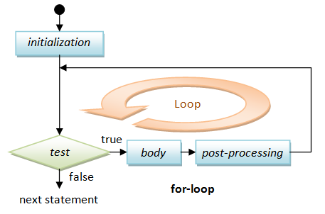

Since its release in December 4, 1995 (six months after Java, which was released in May 23, 1995), JavaScript has gone through many changes. JavaScript began as a client-side programming language (which runs inside a web browser via a built-in JavaScript engine) for adding interactive contents to the web pages. It became more robust with DHTML (1997) and Ajax (1999). With Node.js (released in May 27, 2009), JavaScript can be used to program server-side and build full-stack web applications, as well as standalone utility scripts. In 2015, the ECMAScript 6 (ES6 or ES2015) introduces major update to the language, such as classes and modules, and make JavaScript a general-purpose programming language capable of complex software tasks.
Introduction
It began as a Client-side Programming Language run inside a web browser via a Built-in JavaScript Engine
JavaScript is the most widely used client-side programming language that lets you supercharge your HTML with interactivity, animation and dynamic visual effect for better User Interface and User Experience (UI/UX). It is:
- a small, lightweight, object-oriented, cross-platform, special-purpose scripting language meant to be run under a host environment (typically a web browser).
- a client-side scripting language to enrich web user-interfaces and create dynamic web pages (e.g., for...input validation, and immediate response to user's actions).
- the engine that supports AJAX (Asynchronous JavaScript and XML - that can be used to update one part of the web page asynchronously), which generate renew interest in JavaScript.
JavaScript works together with HTML/CSS. HTML provides the contents; CSS specifies the presentation; and JavaScript programs the behavior. Together, they enrich the UI/UX of the web users.
JavaScript is Now Everywhere with Node.js
JavaScript has grown beyond the client-side programming. With the introduction of Node.js in 2009 (an open-source, cross-platform JavaScript run-time environment), you can run your JavaScript standalone or inside the server (instead of a browser). This allows you to use one single language for both the server-side and client-side programming.
History and Versions
JavaScript, originally called LiveScript, was created by Brendan Eich at Netscape in 1995. Soon after, Microsoft launched its own version of JavaScript called JScript. Subsequently, Netscape submitted it to ECMA (formerly "European Computer Manufacturers Association", now "Ecma International - European association for standardizing information and communication systems") for standardization, together with Microsoft's JScript.
The ECMA Specification is called "ECMA-262 ECMAScript Language Specification" @ http://www.ecma-international.org/publications/standards/Ecma-262.htm (also approved as "ISO/IEC 16262"):
- ECMA-262 version 1 (June 1997): First edition
- ECMA-262 version 2 (August 1998)
- ECMA-262 version 3 (December 1999): Added regular expressions, try/catch, switch, do-while, etc.
- ECMA-262 version 4 - Abandon due to political differences. In 2007, the TC-39 (the committee responsible for ECMAScript) put up a draft specification for ECMAScript 4, which was massive in scope and introduced many new syntax and features. But a group of developers from Yahoo, Google and Microsoft felt that was too much and created an alternate proposal called ECMAScript 3.1. ECMAScript 4 was never finalized.
- ECMA-262 version 5 and 5.1 (June 2011): ECMAScript 3.1 was eventually standardized as ECMAScript 5. Added "strict mode", JSON, Array iteration methods, etc.
- ECMA-262 2015: most popularly known as ECMAScript 6 or ES6.
This version added significant new syntax for writing complex application, including class declaration,letfor local declarations,constfor constant local declaration, default parameter values, iterators and for...of loops, Python-style generators, arrow function expression (() => {...}), binary data, typed arrays, new collections (maps, sets and WeakMap), promises, reflection, proxies, template literals for strings, and many more. - ECMAScript 2016 (ES7): Since ES6, ECMAScript standards are on yearly release cycles in June.
This version added exponential operator (**), block-scoping of variables and functions,awaitandasynckeywords for asynchronous programming, etc. - ECMAScript 2017 (ES8): Added string padding, async functions which use generators and promises,
Object.values,Object.entriesfor easy object manipulation, etc. - ECMAScript 2018 (ES9): Added rest parameters (
...), spread operator, asynchronous iteration, additions to regular expression. - ECMAScript 2019 (ES10): Added
Array.prototype.flat,Array.prototype.flatMap, changesArray.sortandObject.fromEntries, catch binding becomes optional, etc. - ECMAScript 2020 (ES11): introduces a
BigIntprimitive type for arbitrary-size integers, the nullish coalescing operator (??) and theglobalThisobject. - ECMAScript 2021 (ES12): Added enhancement to strings (
replaceAll), promises (Promise.any), and object references. Logical assignment operators (??=,&&=,||=,)
JavaScript vs. Java
Java is a full-fledged general-purpose programming language. It was created by James Gosling at Sun Microsystems (now part of Oracle) and released in August 1995.
JavaScript was created by Brendan Eich at Netscape, also in 1995. Originally called LiveScript, it was a small and lightweight special-purpose language for writing client-side program running inside a browser to create active user-interface and generate dynamic web pages. It was renamed to JavaScript in an ill-fated marketing decision to try to capitalize on the popularity of Java language, when Netscape released its Navigator 2 in 1996.
Java and JavaScript are totally different languages for different programming purposes. However, in the early days, some efforts were made to adopt Java syntax and convention into JavaScript, such that JavaScript seems to be a subset of Java. In reality, they have very little in common.
What Client-side JavaScript CANNOT Do?
Remember that JavaScript is a client-side program that you downloaded from a server, and run inside the browser of your (client) machine. What to stop someone from writing a JavaScript that wipes out your hard disk, or triggers a denial-of-service attack to another server? As a result, for security purpose,
- It cannot read file from the client's machine.
- It can only connect to the server that it come from. It can read file from the server that it come from. It cannot write file into the server machine.
- It cannot connect to another server.
- It cannot close a window that it does not open.
jQuery
jQuery is a popular cross-browser JavaScript Library. jQuery is JavaScript (but having its own extension syntax), hence, you need to understand JavaScript. I suggest you read through the JavaScript syntax (and pay particular attention to objects), and then switch into jQuery for your production. Read "jQuery Basics".
Standalone and Server-side JavaScripts with Node.js JavaScript Engine
[TODO]
JavaScript Source-Code Editors and IDEs
You need a text editor to write your JavaScript. You could use a plain-text editor such as Windows' NotePad or macOS's TextEdit (strictly NOT recommended as they can't do syntax highlighting). To improve your productivity, a good source-code editor (which provides syntax highlighting, auto-code-complete, snippets, documentation, symbol navigation, refactoring, etc.) is essential. There are many freeware/shareware available, such as Visual Studio Code (VS Code), Sublime Text, Atom, Brackets, Komodo Edit, Emacs, Vim, BBEdit, TextMate, NotePad++ (Windows), etc. You can also use a full-scale IDE such as Eclipse, NetBeans, IntelliJ IDEA. There are also many "online" editors and compilers available (e.g., Programiz, JSFiddle, Playcode), but I think that you should install your own.
Client-Side JavaScript by Examples
I shall assume that you know HTML and CSS (read my HTML/CSS articles otherwise). I shall also assume that you understanding some programming basics (computational thinking) such as variables, if-else and for-loop constructs.
Client-side JavaScripts run inside a browser via a built-in JavaScript engine. There are standards on JavaScript. But the Big-5 (Chrome, Firefox, IE/Edge, Safari and Opera), in particular the IE, does not adhere to all the standards strictly. Furthermore, they create their own extensions. Hence, the behavior of JavaScript could be different in different browsers. You may need to test your JavaScripts on more than one browsers.
JavaScript also run standalone (and in the server). To run JavaScript standalone, you need to install Node.js, which is a JavaScript engine. I will present the examples in the next section.
Client-side JS EG 1: Functions alert() and document.write()
Let us write our first client-side JavaScript to print the message "Hello, world".
Start with a new file and enter the following codes. Do not enter the line numbers, which is used to aid in explanation. Take note that:
- JavaScript is case sensitive. A
roseis NOT aROSEand is NOT aRose. - "Extra" white spaces (blanks, tabs and newlines) are ignored. That is, multiple white spaces is treated as a single blank character. You could use them liberally to make your program easier to read.
Save the file as "JSExAlertWrite.html" (or any filename that you prefer, with file extension of ".html" or ".htm"). Run the script by loading the HTML file into a JavaScript-capable browser (e.g., One of the BIG FIVE - Chrome, Firefox, Internet Explorer/Edge, Safari or Opera).
<!DOCTYPE html>
<!-- JSExAlertWrite.html -->
<html lang="en">
<head>
<meta charset="utf-8">
<title>JavaScript Example: Functions alert() and document.write()</title>
<script>
alert("Hello, world!");
</script>
</head>
<body>
<h1>My first JavaScript says:</h1>
<script>
document.write("<h2><em>Hello world, again!</em></h2>");
document.write("<p>This document was last modified on "
+ document.lastModified + ".</p>");
</script>
</body>
</html>How it Works?
- JavaScripts are programming codes that are embedded inside an HTML document. The codes are contained between a pair of
<script>and</script>tags, as follows:<script> // Your JavaScript programming codes here! </script>NOTE: In HTML4/XHTML, you need to include attributetype="text/JavaScript"to the<script>opening tag. - You could place the scripts in either the
HEADsection (called header script) orBODYsection (called body script) of an HTML document. You are free to embed as many scripts into a single document as you like, using multiple<script>...</script>elements. Lines 7-9 and Line 13-17 are two pieces of JavaScripts, placed in theHEADandBODYsections, respectively. - JavaScript statements are terminated by a semicolon
';'(like Java/C/C++/C#). - The
alert(str)function (Line 8) pops out a dialog box displaying thestrand a OK button. Strings are enclosed by a pair of double quotes or single quotes, e.g.,"hello"or'hello'. - The current web page is represented by the so-called
documentobject in the JavaScript. Thedocument.lastModified(Line 16) property stores the last modified date of the current document. Thedocument.write(str)function (Line 14 to 16) can be used to write the specifiedstrto the current document, as part of the current HTML document. - The
'+'operator (Line 16) can be used to concatenates two strings (like Java). - As a result of the
document.write(), theBODYsection of this document contains:<h1>My First JavaScript says</h1> <h2><em>Hello world, again!</em></h2><p>This document was last modified on mm/dd/yyyy hh:mm:ss.</p>
- The
alert(str)anddocument.write(str)are some of the commonly-used built-in functions provided in JavaScript.
TRY: Print the document's title and the URL location. (Hints: use document.title and document.location properties.)
Don't Get Caught by the Cache - Do Control-Refresh (or Control-F5)
If you modify the codes and reload the web page, the new codes may not get executed because the browser caches the previously loaded version. You could use Control-F5 (Control-Refresh) to ask the browser to discard the cache, and fetch a new page.
Don't Use alert()
Because nobody like it.
"The use of alerts is usually discouraged in favour of other methods that do not block users from interacting with the page - in order to create a better user experience. Nevertheless, it can be useful for debugging."
alert() is technically a window object's property, and shall be referenced as window.alert(). But since window is a global object, all its variables are global variables, and can be referenced without the object name.
Browsers' F12 Web Development Tools and Debugger
Before we proceed to the next example, you should try out the Web Development Tools, which is available in most of the browsers for debugging HTML/CSS/JavaScript/webapps.
- Launch your browser and push F12 to activate the Web Development Tools (I have tried on Firefox, Chrome, Edge).
- Select the "Console" pane. You can enter JavaScript statements in the console. For example, enter the following JavaScript statements one-by-one and observe the results.
alert('hello, world') document.write('<h1>hello world, again</h1>') console.log('hello world, again and again')
Notes: console.log(msg) writes the msg to the console, which is often used for debugging (like System.out.println() in Java, or printf() in C)
Where are the error messages?
If you make any syntax errors in the previous example, you will not see any error messages appear on the browser, but the script simply doesn't run. It is impossible to debug a program without the error messages! Thankfully, you can actually find the error messages in the console. Make some errors and refresh the browser.
Client-Side JS EG 2: Variables and Functions prompt(), confirm()
This script prompts the user for his/her name, confirms the name, and prints a greeting message.
There are three kinds of pop-up dialog boxes for interacting with the users:
- The
alert(str)function puts thestron a pop-up box with a OK button. User needs to click the OK button to continue. - The
prompt(promptingStr, defaultStr?)function puts up an input pop-up box with thepromptingStrwith an OK and Cancel buttons. It returns the input entered by the user as a string; or a special value callednullif the user hits the Cancel button. The optional parameterdefaultStrspecifies the initial string to be shown. In this article, I shall indicate optional function parameters with a trailing'?'for compactness. - The
confirm(str)function putsstron a pop-up box with OK and Cancel buttons. It returnstrueif user hits the OK button; orfalseotherwise.
<!DOCTYPE html>
<!-- JSExVar.html -->
<html lang="en">
<head>
<meta charset="utf-8">
<title>JavaScript Example: Variables and functions prompt() and confirm()</title>
<script>
var username = prompt("Enter your name: ", "");
if (confirm("Your name is " + username)) {
document.write("<h1>Hello, " + username + "!</h1>");
} else {
document.write("<h1>Hello, world!</h1>");
}
</script>
</head>
<body>
<p>Welcome to JavaScript!</p>
</body>
</html>How it Works?
- Line 8 declares a global variable called
username, via the keywordvar. A variable is a named storage location that holds a value. Once the variable is declared, you can assign (and re-assign) a value to that variable, via the assignment operator'='(Line 9). - Line 9 invokes the
prompt(promptingStr, defaultStr?)function to pop out a dialog box, and reads in the string entered by the user. The string read is assigned to the variableusername. The functionprompt()is similar to thealert(), but it accepts a user's input. - In Line 10, the
confirm(str)function puts up the message and returns eithertrueorfalse, depending on whether the user hits the OK or Cancel button. - If the result is
true, Line 11 prints"Hello, username!". Otherwise, Line 13 prints"Hello, world!".
TRY: Instead of printing the greeting message using document.write(), do it via an alert().
Client-Side JS EG 3: The Date Object
The following script creates a Date object representing the current date-time, and prints the current time.
<!DOCTYPE html>
<!-- JSExDate.html -->
<html lang="en">
<head>
<meta charset="utf-8">
<title>JavaScript Example: The Date object</title>
<script>
var now = new Date(); // current date/time
var hrs = now.getHours(); // 0 to 23
var mins = now.getMinutes();
var secs = now.getSeconds();
document.writeln("<p>It is " + now + "</p>");
document.writeln("<p>Hour is " + hrs + "</p>");
document.writeln("<p>Minute is " + mins + "</p>");
document.writeln("<p>Second is " + secs + "</p>");
if (hrs < 12) {
document.writeln("<h2>Good Morning!</h2>");
} else {
document.writeln("<h2>Good Afternoon!</h2>");
}
</script>
</head>
<body></body>
</html>How it Works?
- Line 8 declares a variable called
now. It also creates aDateobject (via thenewoperator), which contains the current date-time stamp, and assign it tonow. - "
//" begins an end-of-line comment (Lines 8 and 9). Comments are ignored by the JavaScript engine but important in explaining your codes to others (and to yourself three days later). - Line 9 declares a variable called
hrs. It also invokes the functiongetHours()on objectnow, in the form ofnow.getHours(), to retrieve the hour part of objectnow, and assign it to variablehrs. Lines 9 and 10, similarly, handle the minutes and seconds. - Line 12 to 14 use
document.writeln()to write to the current document.writeln()(write-line) writes a newline (\n) after the given string. Take note that browser ignores extra white space (newlines, blanks, tabs) in an HTML document; you need to write a<p>...</p>or<br>tag to ask the browser to display a line break. - Lines 16-20 contains a conditional if-then-else statement. Depending on the value of
hrs, one of the messages will be displayed.
TRY:
- Modify the above script to print the current date, month, year and day of the week. (Hints: Use functions
getDate(),getMonth(),getFullYear()andgetDay()of aDateobject.getDate()returns 1-31.getMonth()returns 0 to 11 for January to December.getFullYear()returns a 4-digit year.getDay()returns 0 to 6 for Sunday to Saturday). - Use a conditional statement to print the day of the week in word (i.e., 0 for Sunday, 1 for Monday and etc.). (Hints: Use the
if-elseif-elseif...elseconstruct as follow.)if ( condition-1 ) { block-1 ; } else if ( condition-2 ) { block-2 ; } else if ( condition-3 ) { block-3 ; ...... ...... } else { block-n ; }
Client-Side JS EG 4: Loops
The following script prompts the user for a multiplier, and prints the multiples of 1 to 100 using a for-loop.
<!DOCTYPE html>
<!-- JSExLoop.html -->
<html lang="en">
<head>
<meta charset="utf-8">
<title>JavaScript Example: Loop</title>
</head>
<body>
<h2>Testing Loop</h2>
<script>
var multiplier = prompt("Enter a multiplier: ");
for (var number = 1; number <= 100; number++) {
document.writeln(number * multiplier);
}
</script>
</body>
</html>How it Works?
- Line 11 prompts the user for a number, and assigns it to the variable
multiplier. - Lines 12-14 contain a for-loop. A for-loop takes the following syntax:
for ( initialization ; test ; post-processing ) { body ; }There are four parts in a for-loop. Three of them, initialization, test and post-processing, are enclosed in brackets
()and separated by 2 semicolons. The body contains the repetitive task to be performed. The initialization statement is first executed. The test is then evaluated. If the test returns true, the body is executed; followed by the post-processing statement. The test is evaluated again and the process repeats until the test returns false. When the test is false, the for-loop completes and program execution continues to the next statement after the for-loop. The following flow chart illustrates the for-loop process:In this example, the variable
numberis initialized to 1. Ifnumberis less than or equal to 100, the body of the loop executes, followed by the post-processing statement, which increment the value ofnumberby 1. The loop repeats until the value ofnumberis NOT less than or equal to 100 (i.e., more than 100).
TRY:
- Modify the above script to prompt the user for the multiplier as well as the number of multiples to be printed (in two
prompt()statements). - Modify the above script to print only multiples that are odd number. (Hint: The modulo operator "
%" can be used to compute the remainder, e.g.,x % 2computes the remainder ofxdivides by 2, which results in either 0 or 1.)
Client-Side JS EG 5: User-defined Functions and onclick Event Handler
Besides the JavaScript built-in functions such as alert(), prompt(), write(), and writeln(), you can define your own functions. A function has a name and a body consisting of a set of JavaScript statements that collectively performs a certain task. It may take zero or more argument(s) from the caller and return zero or one value back to the caller.
<!DOCTYPE html>
<!-- JSExEvent.html -->
<html lang="en">
<head>
<meta charset="utf-8">
<title>JavaScript Example: User-defined function and onclick Event Handler</title>
<script>
function openNewWindow() {
open("JSExAlertWrite.html");
}
</script>
</head>
<body>
<h2>Example on event and user-defined function</h2>
<input type="button" value="Click me to open a new window"
onclick="openNewWindow()">
</body>
</html>How it Works?
- Lines 8-10 define a function called
openNewWindow(), via the keywordfunction. The function invokes the built-in functionopen(url), which opens a new browser window (or tab) and loads the page "JSEx1.html". - Lines 15-16 create an HTML button. Clicking the button triggers the
onclickevent handler, i.e.,openNewWindow()defined earlier.
TRY: Include another button, which opens "JSExVar.html".
Client-Side JS EG 6: More Event Handlers: onload, onmouseover and onmouseout
JavaScript can be used to handle many types of events, in response to a user's action or browser's action. For example,
onload: fires after browser loaded the page.onmouseoverandonmouseout: fires when the user points the mouse pointer at/away from the HTML element.
<!DOCTYPE html>
<!-- JSExMoreEvents.html -->
<html lang="en">
<head>
<meta charset="utf-8">
<title>JavaScript Example: Events onload, onmouseover and onmouseout</title>
<script>
var msgLoad = "Hello!";
</script>
</head>
<body onload="alert(msgLoad)">
<p>"Hello" alert Box appears <em>after</em> the page is loaded.</p>
<p onmouseover="this.style.color='red'"
onmouseout="this.style.color=''">Point your mouse pointer here!!!</p>
</body>
</html>Dissecting the Program
- Line 8 defines a variable
msgLoad, which holds the strings to be displayed in theonloadevent handlers. - In the
<body>opening tag (Line 12), we define theonloadevent handler for theloadevent. It invokesalert()with the message defined earlier. - Line 13 and 14 defines the event handlers
onmouseoverandonmouseoutfor the HTML element<p>. The text's color will be changed to red when the user points the mouse pointer at the element (by setting the CSS style propertycolorto red), and revert back to its original color when the mouse pointer is moved away (by resetting the CSS style propertycolorto an empty string). The special keywordthisrefer to this object.
Client-Side JS EG 7: Separating HTML, CSS and JavaScript
The previous example works fine. You will find many such example in textbooks, especially the older textbooks. However, it has a big problem. All the HTML contents, CSS presentation styles and JavaScript programming codes are placed in a single file. For a small toy program, the problem is not serious. But when your program grows and if the HTML, CSS and JavaScript are written by different people, you will have a real challenge in maintaining the program. Remember that HTML is for the contents, CSS for presentation and JavaScript for the behavior.
Let's rewrite the example to place the HTML, CSS and JavaScript in three different files.
<!DOCTYPE html>
<!-- JSExFiles.html -->
<html lang="en">
<head>
<meta charset="utf-8">
<title>JavaScript Example: Separating HTML, CSS and JavaScript</title>
<link rel="stylesheet" href="JSExFiles.css">
</head>
<body>
<p>"Hello" alert Box appears <em>after</em> the page is loaded.</p>
<p id="magic">Point your mouse pointer here!!!</p>
<script src="JSExFiles.js"></script>
</body>
</html>/* JSExFiles.css */
@CHARSET "UTF-8";
.highlight {
color: red;
}// JSExFiles.js
window.onload = function() {
init();
alert("Hello!");
}
function init() {
document.getElementById("magic").onmouseover = function() {
this.className = "highlight";
}
document.getElementById("magic").onmouseout = function() {
this.className = "";
}
}How it Works?
- Placing the scripting codes inside the HTML page is not a good software engineering practice. Instead, the now-preferred approach is to place the scripts, as well as CSS styles, in external files, which can then uniformly applied to all pages in your website.
- Let's begin with the HTML file. Now, the HTML file keeps only the contents, no presentation style and nor programming logic.
- <link rel="stylesheet" href="JSExFiles.css">
The CSS style sheet is kept in an external file, referenced via the above<link>tag.
Note: In HTML4/XHTML1.0 you need to include attributetype="text/css"in the<link>opening tag. - <script src="JSExFiles.js"></script>
Also, the JavaScript programming code is kept in an external file, referenced via the above<script>tag. Take note that the closing tag</script>is needed, although there is no content.
Note: In HTML4/XHTML1.0, you need to include attributetype="text/JavaScript"in the<script>opening tag. - <p id="magic">Point your mouse pointer here!!!</p>
We provide an uniqueidto this<p>tag. Thisidwill be used in the JavaScript to select this tag.
- <link rel="stylesheet" href="JSExFiles.css">
- The CSS file contains only one style definition:
.highlight { color:red; }
This define a CSS Class-Selector calledhighlightto display the element withclass="highlight"in color red. - In the JavaScript:
- window.onload = function() { ... }
We attach a so-called inline function as theonloadevent handler. This function will be invoked after the page is fully loaded. - document.getElementById("magic").onmouseover = function() { this.className = "highlight"; }
We usedocument.getElementById("magic")function to select the<p id="magic">element. We then attach an inline function as theonmouseoverevent handler for this<p>element. When the user moves the mouse over this element, this function changes theclassattribute to "highlight". In response, the CSS turns the<p>element to color red. - document.getElementById("magic").onmouseout = function() { this.className = ""; }
Similarly, when the user moves the mouse out of the<p id="magic">element, the event handler changes theclassattribute to "". In response, CSS changes the color to its default. - alert("Hello!")
This puts up an alert dialog box.
- window.onload = function() { ... }
Where to place the CSS <link> Tags?
It is recommended to place the CSS's <link> tags in the HEAD section. This allows the CSS to be loaded first. The styles can then be applied while your HTML elements are loaded, rather than showing an un-styled HTML page.
Where to place the External <script> Tags?
It is recommended to place the <script> tags just before the closing </body> tag. Loading your scripts last allows your site to show your document more quickly and discourage your JavaScript from trying to interact with elements that haven't been loaded yet.
Client-Side JS EG 8: Manipulating the Contents of HTML Elements
You can select HTML element(s) within the current page via these JavaScript built-in functions:
- document.getElementById(idName): returns the HTML element with
id="idName", ornullif theiddoes not exist. Theidvalue should be unique within an HTML document. - document.getElementsByTagName(tagName): returns an array of HTML elements with the given HTML tag.
- document.getElementsByClassName(className): returns an array of HTML elements having attribute
class="className". - document.getElementsByName(name): returns an array of HTML elements having attribute
name="name".
To modify the content of an HTML element, you can assign a new value to the textContent property of that element.
<!DOCTYPE html>
<!-- JSExInnerHtml.html -->
<html lang="en">
<head>
<meta charset="utf-8">
<title>JavaScript Example: Modifying the Text Content of HTML Elements</title>
</head>
<body>
<h1 id="heading1">Heading 1</h1>
<h2>Heading 2</h2>
<h2>Heading 2</h2>
<p class="para">Paragraph 1</p>
<p class="para">Paragraph 2</p>
<p class="para">Paragraph 3</p>
<input type="button" id="btn1" value="Change Heading 1" />
<input type="button" id="btn2" value="Change Heading 2" />
<input type="button" id="btn3" value="Change Paragraph" />
<script src="JSExInnerHtml.js"></script>
</body>
</html>// JSExInnerHtml.js
window.onload = init;
function init() {
document.getElementById("btn1").onclick = changeHeading1;
document.getElementById("btn2").onclick = changeHeading2;
document.getElementById("btn3").onclick = changeParagraph;
}
function changeHeading1() {
const elm = document.getElementById("heading1"); // id is unique
elm.textContent = "hello";
// Create a new element and insert after h1
const newElm = document.createElement('p');
newElm.textContent = "hello, hello";
elm.after(newElm);
}
function changeHeading2() {
const elms = document.getElementsByTagName("h2"); // Array of elements
for (let i = 0; i < elms.length; i++) { // using traditional for(;;) loop
elms[i].textContent = "hello, again";
}
}
function changeParagraph() {
const elms = document.getElementsByClassName("para"); // Array of elements
for (const elm of elms) { // using JavaScript's for...of loop
// using const-declaration as a new block-scope elm is created for each iteration
elm.textContent = "hello, again and again";
}
}How it works?
- This HTML document contains a
<h1>element with an uniqueid="heading1", two<h2>elements, three<p>elements withclass="para", and three<input type="button">with uniqueid. - In the user-defined function
changeHeading1(), we usedocument.getElementById("heading1")to select the<h1>element, and then modify itstextContentproperty. - In
changeHeading2()function, we usedocument.getElementsByTagName("h2")to select all the<h2>elements in an arrayelms. We then use a for-loop to iterate through all the elements in the array. Theelms.lengthproperty keeps the length of the array. - In
changeParagraph()function, we usedocument.getElementsByClassName("para")to select all the<p>elements. We use JavaScript'sfor...ofloop to iterate through all the elements. We use the safestconst-variable, asfor...ofloop create a new block-scope variable for each iteration; but the traditionalfor(;;)does not. - The page contains three buttons to trigger the functions defined.
- in order to manipulate elements in the DOM using JavaScript, the JavaScript code must be run after the
relevant element has been created in the document. This can be done by putting the JavaScript just before the ending
</body>tag. - The script contains a function
init(), which is assigned as theonloadhandler viawindow.onload=init. That is,init()will be triggered after the page is loaded. Theinit()function assignsonclickevent handlers to the buttons, selected viadocument.getElementById()using the unique buttons'id. - Instead of
textContentproperty, older versions of JavaScript useinnerHTML(which includes both texts and markups) to modify the content of the selected element. According to MDN: "textContentshould be used instead. Because the text is not parsed as HTML, it's likely to have better performance. Moreover, this avoids an XSS (Cross-Site Scripting) attack vector."
Client-Side JS EG 9: Intercepting a Hyperlink
This example uses a script to intercept a hyperlink to put up a warning message, then proceed to the link.
<!DOCTYPE html>
<!-- JSExLink.html -->
<html lang="en">
<head>
<meta charset="utf-8">
<title>JavaScript Example: Intercept an Hyperlink</title>
</head>
<body>
<a href="JSExAlertWrite.html" id="myLink">JavaScript Example 1</a>
<script src="JSExLink.js" ></script>
</body>
</html>// JSExLink.js
window.onload = init;
function init() {
document.getElementById("myLink").onclick = showWarning;
}
function showWarning() {
return confirm("Warning! Proceed with care!");
}How it works?
- The HTML page has an hyperlink
<a>with an uniqueid. - The
init()function assigns anonclickhandler to the hyperlink, selected viadocument.getElementById(). - When the hyperlink is clicked, the
onclickhandlershowWarning()triggered. Ifconfirm()returns true, the new page will be loaded; otherwise, the current page remains.
More Advanced JavaScript Examples
More "Advanced JavaScript Examples".
Debugging JavaScripts
A graphic debugger is a MUST in programming. Programming in JavaScript, in particular, requires a good debugger. It is because JavaScripts are interpreted and does not need to be compiled. Hence, there is no compiler to show you the syntax errors. A simple and trivial syntax error (e.g., missing bracket, mis-spelling) will render the entire script not workable. Worst still, you would not see any error message when the script did not work. Can you debug without any error message or clue?
Without a graphic debugging, the only mean to debug JavaScript is to insert alert() at strategic locations to print out selected data.
After modifying a JavaScript, I recommend that you use Ctrl-F5 to refresh the page, which shall load a fresh copy instead of loading from the cache. You might need to clear the browser's cache or re-start the browser, if you modification does not take effect.
F12 Web Developer Tools
In Chrome and Firefox, you can press F12 to activate the developer Tools (hence called F12 Developer Tools).
It provides these features:
- Console: View the JavaScript error messages. Start the firebug and switch to the "Console" panel.
- Script: View and debug JavaScript. Start the firebug. Switch to the "Script" panel. "Enable" or "Reload" if necessary. You can set a breakpoint by clicking on the statement number, single step through the JavaScript statements, watch the expression, and etc.
- DOM: View the HTML DOM of the current document.
- HTML and CSS.
To debug JavaScript:
- Launch Firebug ⇒ Choose the "Script" panel to view your JavaScript, shown with green-bold line numbers.
- Refresh (Ctrl-F5) the page, and check the error console (Under "Console" ⇒ "Errors") for syntax errors! Correct all the syntax errors.
- To trace the program, set breakpoints at selected JavaScript statements, by clicking on the right margin (to the left of line number). A red circle shows up denoting a breakpoint. Take note that you can only set breakpoint on statements with a green-bold line number. [If your JavaScript statements do not have a green-bold line number, there are syntax errors on these statements. You need to correct the syntax errors and reload the page.]
- Trigger the script (via clicking button/link, or reloading the page). The execution stops at the first breakpoint. You can then step-over the statement (or step-into function), and inspect the variables by positioning the mouse pointer on the variable; or add the variable to "watch".
- You can resume the execution (via the continue button).
The console.log()
Instead of using alert() and document.write() to show the intermediate results, you can also use console.log(message[, element]), which writes the message and the value of the element to the error console. It does not interfere the appearance you web page nor your normal operations.
For example, modify the JavaScript in Example 8 to print the values of innerHTML before modification. You need to turn on the console (press F12) to see the output.
// JSExInnerHtmlDebug.js
window.onload = init;
function init() {
document.getElementById("btn1").onclick = changeHeading1;
document.getElementById("btn2").onclick = changeHeading2;
document.getElementById("btn3").onclick = changeParagraph;
}
function changeHeading1() {
var elm = document.getElementById("heading1"); // One element
console.log(elm.innerHTML); // Print current value before modification
elm.innerHTML = "Hello";
}
function changeHeading2() {
var elms = document.getElementsByTagName("h2"); // Array of elements
for (var i = 0; i < elms.length; i++) {
console.log(elms[i].innerHTML);
elms[i].innerHTML = "Hello again!";
}
}
function changeParagraph() {
var elms = document.getElementsByClassName("para"); // Array of elements
for (var i = 0; i < elms.length; i++) {
console.log(elms[i].innerHTML);
elms[i].innerHTML = "Hello again and again!";
}
}JavaScript and HTML
As seen from the previous examples, JavaScripts are embedded inside an HTML document, and executed by the browser. There are two occasions on which browser executes JavaScript instructions:
- JavaScripts enclosed in
<script>...</script>runs during loading of the page. - Some JavaScripts, called event handlers, run as a result of the user's or browser's action (or event). For example, clicking a button (
onclick) or loaded a page (onload).
There are, therefore, two places to put your JavaScript:
- between
<script>and</script>container tags; and - inside the HTML tags as the event handlers (such as
onclick,onmouseover,onload), e.g.,onclick="JavaScriptStatements".
The <script> Element
The <script>...</script> element contains the JavaScript programming statements. For example,
<script>
... Your JavaScript statements here ...
</script>
In HTML4/XHTML1.0, you need to include the attribute type="text/javascript" in the <script> opening tag.
In <head> or <body>?
You can place your JavaScript in either the HEAD section (called Header Script) or BODY section (called Body Script) of an HTML document. Typically, global variables and function definitions are placed in HEAD section, which will always be loaded and available to be used by the scripts in the BODY section. If you script refers to the DOM elements. place it before the </body>, so as to ensure that the DOM is constructed. Placing the <script> outside the HEAD or BODY causes a HTML5 validation error.
The best practice is to place the external <script> tags just before the closing </body> tag. Loading your scripts last allows your site to show your document more quickly and discourage your JavaScript from trying to interact with elements that haven't been loaded yet.
External JavaScripts
The now-preferred approach is to keep the JavaScript in an external file with file extension of ".js", and reference it via the src (source) attribute as follows:
<script src="JavaScriptFilename.js"></script>
Take note that the closing tag </script> is needed although there is no content!?
In HTML4/XHTML1.0, you need to include type="text/javascript" in the <script> opening tag.
The <noscript> Element
The <noscript>...</noscript> element provide an alternate message if scripting is disabled or not supported.
Standalone JavaScript by Examples
To run JavaScript standalone (NOT inside a web browser which has a built-in JavaScript engine), you need to install Node.js, which provide an JavaScript engine. See Node.js article on how to install Node.js.
Standalone JS Eg 1: Console.log() and User-Defined Function
// Hello.js
var msg = "hello"; // string
helloFunction();
function helloFunction() {
let i = 99; // integer
const f = 55.66; // float
console.log(msg + " world");
console.log(f, ++i);
}To run the script, open a CMD/Terminal and issue:
node Hello.js
hello world 55.66 100
How it Works
- ES6 introduces two new keywords:
letto declare a local variable (block-scope), andconstto declare a local constant.varwill be used to declare a global variable. Console.log()writes to the System (error) Console, just likeprintf()in C orSystem.out.println()/System.err.println()in Java.- If you wrap the above codes inside
<script>...</script>tags, and run it under a web browser, you will need to activate the debugger (Web Developer Tools) to see the outputs. See the above section on client-side examples.
Standalone JS Eg 2: [TODO]
[TODO] Check Limitations such as File IO, Networking etc. Compare with Shell Script and Python script for automation.
Server-Side JavaScript by Examples
You can also use JavaScript to program a server-side webapp, just like Java Servlet/JSP, Microsoft ASP, PHP, Python, etc. The appeal is that you can use one single language to program both the client-side and the server-side in a webapp.
See Node.js article.
JavaScript Basic Syntax
Comments
Comments are ignored by the JavaScript runtime but greatly useful in explaining your codes to others (and also to yourself three days later). You should use comments liberally to explain or document your codes.
An end-of-line comment begins with // and lasts till the end of the current line. A multi-line comment begins with /* and lasts till */.
Take note that:
- HTML comments are enclosed inside
<!-- ... -->. - CSS supports multi-line comment
/* ... */, but NOT end-of-line comment//. - JavaScript supports both
/* ... */and//, like Java/C/C++/C#.
Whitespaces (blank, tab, newline)
Like C/C++/Java, JavaScript ignores additional whitespaces (blanks, tabs, and newlines). I strongly recommend that you use additional whitespaces to format your program to make your code easier to read and understand.
Expressions
An expression is a combination of variables, literals, operators, and sub-expressions that can be evaluated to produce a single value.
Statements, Semicolon and Blocks
A statement is a single programming instruction. Unlike C/C++/Java, where you need to end a statement with a semicolon (;), in JavaScript the semicolon is optional. However, if semicolon is missing, you need to end the statement with a newline (and JavaScript engine will insert a semicolon for you).
Semicolons in JavaScript divide the community. Some prefer to use them always, no matter what. Others like to avoid them for brevity. I shall leave it to you.
A block consists of zero or more statements enclosed in a pair of curly braces { statements }. No semicolon is needed after the closing brace.
Variables, Literals & Types
Variable declarations (var, let, const) and Assignment Operator (=)
A variable is a named storage location that holds a value. Prior to ES6, you can only use var to declare global variables. ES6 introduces two new keywords: let to declare a local block-scope variable, and const to declare a local block-scope constant.
You should try const (safest), followed by let, and avoid var.
You can assign (and re-assign) a value to a variable using the assignment (=) operator. For example,
const magic = 88; // const-variable's value cannot change for (let i = 0; i < 5; ++i) { // i has local block-scope console.log(i); } var font_size = 12; // var-variable is global
Identifiers
Identifiers are names given to identify entities (such as variables and functions). The rules for valid identifiers are:
- An identifier can contain letters (
a-z,A-Z), digits (0-9), underscore (_) and dollar sign ($). But it cannot begin with a digit (0-9). - Identifiers are case-sensitive. A
roseis NOT aRose, and is NOT aROSE. - Identifiers cannot be keywords.
- Take note that hyphen (
-) and space are NOT allowed. Hence,font-size,roman new, are NOT valid identifiers. You should use underscore (_) instead of hyphen (-).
Literals
A literal is a fixed value, e.g., 5566, 3.14, "Hello", 'apple', true, null, that can be assigned to a variable, or form part of an expression.
Types
JavaScript is object-oriented. But, It supports both primitive types and objects.
Primitives are not objects and do not possess properties and methods. JavaScript supports these primitive types:
- string: a sequence of characters. Strings literals are enclosed in a pair of single quotes or double quotes (e.g.,
"Hello",'world'). - number: takes both integer (e.g.,
5566) or floating-point (e.g.,3.14159265). - boolean: takes boolean literal of either
trueorfalse(in lowercase). - undefined: takes a special literal value called
undefined. Take note thatundefinedis both a type and a literal value. - symbol (ES6): A data type whose instances are unique and immutable.
- bigint (ES2020/ES11): integers with arbitrary precision.
JavaScript also supports these object types and value (we shall discuss object later):
- object: for general objects.
- function: for function objects. Unlike Java, function is a first class object in JavaScript, e.g., you can assign a function to a variable.
- null: A special literal value for unallocated (unconstructed)
object. Take note thatnullis NOTundefined. Thetypeof(null)isobject.nullis meant to represent an absence of a constructed object.nullis actually considered to be a primitive as it has no properties and methods.
Unlike most of the general programming languages (such as Java/C/C++/C#) which are strongly type, JavaScript is loosely type (similar to most of the scripting languages such as UNIX Shell Script, Perl, Python). You do not have to explicitly declare the type of a variable (such as int and float) during declaration. The type is decided when a value is assigned to that variable. If a number is assigned, the variable takes on the number type and can perform numeric operations such as addition and subtraction. If a string is assigned, the variable takes on the string type and can perform string operations such as string concatenation. In other words, the type is associated with the value, instead of the variable.
Operator typeof
You can use the operator typeof to check the type of the current value assigned to a variable. typeof returns a string.
typeof varname // typeof is an operator typeof(varname) // You can also invoke using function format
For example,
let msg = 'hello' console.log(typeof msg) //string let num = 5 console.log(typeof (num)) //number
The undefined Type and undefined Literal Value
An undeclared variable (via var keyword) takes on a special type called undefined. You cannot refer to its value.
When a variable is declared (via var keyword) without assigning an initial value, it takes on the type undefined and holds a special value called undefined (uninitialized is probably more precise?!), As soon as a value is assigned, the variable takes on the type of that value. The act of putting a value into a variable sets its type. You can change the type of a variable by re-assigning a value of another type. In other words, type is associated with the value, not the variable. Types are converted automatically as needed during execution (known as dynamically-typed).
For examples,
// Undeclared variable v99 console.log('type: ' + typeof v99); //type: undefined console.log('value:' + v99); //ReferenceError: v99 is not defined
// Declare variable v1, without assigning an initial value var v1; console.log('type:' + typeof v1); //type:undefined console.log('value:' + v1); //value:undefined // Assign a "string" value v1 = 'abc'; console.log('type:' + typeof v1); //type:string console.log('value:' + v1); //value:abc // Assign a "number" string v1 = '123'; console.log('type:' + typeof v1); //type:string console.log('value:' + v1); //value: 123 // Assign an "integer" value v1 = 123; console.log('type:' + typeof v1); //type:number console.log('value:' + v1); //value:123 // Assign a "floating point" value v1 = 55.66; console.log('type:' + typeof v1); //type:number console.log('value:' + v1); //value:55.66 // Assign a "boolean" value v1 = false; console.log('type:' + typeof v1) //type:boolean console.log('value:' + v1); //value:false /* Test Objects */ // null object v1 = null; console.log('type:' + typeof v1); //type:object console.log('value:' + v1); //value:null // object v1 = { name:'peter', age:21 }; console.log('type:' + typeof v1); //type:object console.log('value:' + v1); //value:[object Object] console.log('value:' + v1.name); //value:peter console.log('value:' + v1.age); //value:21 // Date object v1 = new Date(); console.log('type:' + typeof v1); //type:object console.log('value:' + v1); //value:Thu Jun 02 2022 13:28:29 GMT+0800 (SGT) // Function object v1 = function () { return 'hello'; }; console.log('type:' + typeof v1);p //type:function console.log('value:' + v1); //value:function () { // return 'hello'; //}
(ES6) Constants const-declaration
You can create a read-only, named constant with the keyword const (in place of var). For example,
const SIZE = 9;
The number Type, Literals & Operations
A variable of type number holds a number, either an integer or a floating-point number.
Integer literals can be expressed in:
- Decimal: begins with a digit
1to9(not0), e.g.,123or-456, - Octal: begins with a digit
0, e.g.,0123or-0456, - Hexadecimal: begins with
0x(or0X), e.g.,0xA1B2or-0XA1B2. - Binary: begins with
0b(or0B), e.g.,0b10011100or-0B11001100. [Binary may not be supported in some browsers.]
Floating-point literals can be expressed in the usual form (e.g., 3.1416) or scientific notation, e.g., -1.23e4, 4.56E-7.
JavaScript also provides some special number literals:
- infinity: e.g.,
1/0 - -infinity: e.g.,
-1/0 - NaN (Not-a-Number): e.g.,
0/0, or converting the string'Hello'to a number.
Arithmetic Operations
Arithmetic operations, as tabulated below, can be applied to numbers. The following results are obtained assuming that x=5, y=2 before the operation.
| Operator | Description | Example | Result (x=5, y=2) |
|---|---|---|---|
| + | Addition | z = x + y; | z is 7 |
| - | Subtraction (or Unary Negation) | z = x - y; | z is 3 |
| * | Multiplication | z = x * y; | z is 10 |
| / | Division | z = x / y; | z is 2.5 |
| % | Modulus (Division Remainder) | z = x % y; | z is 1 |
| ++ | Unary Pre- or Post-Increment | y = x++; z = ++x; Same as: y = x; x = x+1; x = x+1; z = x; |
y is 5; z is 7; x is 7 |
| -- | Unary Pre- or Post-Decrement | y = --x; z = x--; Same as: x = x-1; y = x; z = x; x = x-1; |
y is 4; z is 4; x is 3 |
| ** | Exponent (ES7) |
y ** x |
In JavaScript, arithmetic operations are always performed in double-precision floating-points (NOT integers). That is, 1/2 gives 0.5 (instead of 0 in Java/C/C++). You may use the built-in function parseInt() to truncate a floating-point value to an integer, e.g., parseInt(55.66) and parseInt("55.66") gives 55. You may also use the built-in mathematical functions such as Math.round(), Math.floor(), Math.ceil() for converting a floating-point number to an integer.
Exponent Operator (**)
ECMAScript 2016 (ES7) introduces exponent operator (**), you can write a**n, e.g., 2**5.
Before ES7, you have to use built-in function Math.pow(base, exponent).
Arithmetic cum Assignment Operators
These are short-hand operators to combine two operations.
| Operator | Description | Example | Result |
|---|---|---|---|
| += | Addition cum Assignment | x += y; | Same as: x = x + y; |
| -= | Subtraction cum Assignment | x -= y; | Same as: x = x - y; |
| *= | Multiplication cum Assignment | x *= y; | Same as: x = x * y; |
| /= | Division cum Assignment | x /= y; | Same as: x = x / y; |
| %= | Modulus cum Assignment | x %= y; | Same as: x = x % y; |
Some frequently-used Number built-in Functions
- parseInt(str), parseFloat(str): Parse the
struntil the first non-digit, and return the number; orNaN. - Math.round(num), Math.floor(num), Math.ceil(num):
- Math.random(): Generate a random number between 0 (inclusive) and 1 (exclusive).
- isNaN(str): return true if the
stris not a number. For example,console.log(isNaN('123')); //false console.log(isNaN('1.23')); //false console.log(isNaN('123abc')); //trueIt is interesting to note that JavaScript does not have counterpart functions likeisNumber(),isNumeric(). - Number(str): Return the number represented by
str, orNaN. Take that that this function name begins with uppercase, because this is a type casting operation. - .toFixed(decimalPlaces): Return this number/string to the given number of decimal places. For example,
var n = 1.2345; console.log(n.toFixed(2)); //1.23 console.log(n); //1.2345 (No change)
The string Type, Literals & Operations
A string is a sequence of characters enclosed within a pair of single quotes or double quotes (e.g., "Hello", 'world', "5566", '3.1416'). ES6 introduces multi-line template strings delimited by back quotes (in the next section). You can use an escape sequence to represent special non-printable characters (such as \n for new-line, \t for tab, and \uhhhh for Unicode character); and to resolve conflict (e.g., \", \', \\).
Unlike Java/C/C++, but like HTML/CSS's attributes, you can use either single quotes or double quotes for string. This is handy as you can use single quotes if the string contains double quotes (e.g., '<div id="header"></div>'), without using the clumsy escape sequences (e.g., "<div id=\"header\"></div>").
JavaScript is dynamically-type, and performs type conversion automatically. When a string value is used in arithmetic operations (such as subtraction or multiplication), JavaScript runtime automatically converts the string to a number if it represents a valid number; or a special number called NaN (not-a-number) otherwise. For example,
// In arithmetic operations, a string is converted to the number or NaN. console.log('55' - '66'); //-11 (number)(subtraction) console.log('55' * 2); //110 (number)(multiplication) console.log('Hello' - 1); //NaN (subtraction failed)
The '+' Operator: Addition or Concatenation?
If both the operands to a '+' operator are numbers, it performs the usual numeric addition. However, if one (or both) of the operand is a string, the '+' operator is overloaded to perform string concatenation. The other operand will be converted to a string, if necessary. For example,
// '+' operator is overloaded to perform string concatenation if one of the operands is a string console.log(11 + 22); //33 (number)(usual addition) console.log('11' + '22'); //1122 (string)(concatenation) console.log('11' + 22); //1122 (string)(concatenation) console.log('Hello' + 22); //Hello22 (string)(concatenation)
Converting a numeric string to number: parseInt(), parseFloat() and Number()
To convert a numeric string to a number, you could use the built-in functions parseInt() or parseFloat(), which returns a number if conversion is successful; or NaN otherwise. For example,
var magic = "11"; // numeric string console.log(magic + 22); //1122 (string)(concatenation) console.log(parseInt(magic) + 22); //33 (number)(addition) console.log(parseInt(magic) + "22"); //1122 (string)(concatenation) console.log(parseInt(magic) + parseFloat("22.33")); //33.33 (number)(addition) console.log(parseInt("abc")); //NaN
Take note that parseInt() works as long as the string begins with digits. It will parse up to the first non-digit. For example,
console.log(parseInt("10px"));
//10 (number)
You can also use the function Number(), which converts the object argument to a number that represents the object's value; or NaN if conversion fails. For example,
var magic = "8888" console.log(magic + 8); //88888 (string)(concatenation) console.log(Number(magic) + 8); //8896 (number)(addition) // Number() also works on Object such as Date, e.g., var d = new Date(2015, 5, 1, 12, 34, 56); console.log(d); //2015-06-01T04:34:56.000Z console.log(Number(d)); //1433133296000
Constructing/Converting to string: String() and .toString()
You can construct a string from another type via String() function, e.g.,
let intStr = String(5566) console.log("type:", typeof intStr, " value:", intStr) //type: string value: 5566 let boolStr = String(false) console.log("type:", typeof boolStr, " value:", boolStr) //type: string value: false
You can use .toString() to obtain a string representation of an object, e.g.,
let intStr = (5566).toString() console.log("type:", typeof intStr, " value:", intStr) //type: string value: 5566 let boolStr = (false).toString() console.log("type:", typeof boolStr, " value:", boolStr) //type: string value: false let date = new Date(); console.log(date.toString());
You can also convert a number to string by concatenating with an empty string, e.g.,
let num = 5566 let intStr = num + "" // concatenate with an empty string console.log("type:", typeof intStr, " value:", intStr) //type: string value: 5566
String's Properties
- .length: E.g.,
str.lengthreturns the length of the string.
String's Operations
- .toUpperCase(): returns the uppercase string.
- .toLowerCase(): returns the lowercase string.
- .charAt(idx): returns the character at the
idxposition. Index begins from 0. Negative index can be used, which counts from the end of the string. - .substring(beginIdx, endIdx): returns the substring from
beginIdx(inclusive) toendIdx(exclusive). - .substr(beginIdx, length): returns the substring from
beginIdxoflength. - .indexOf(searchStr, fromIdx?): Return the beginning index of the first occurrence of
searchStr, starting from an optionalfromIdx(default of 0); or-1if not found. - .lastIndexOf(searchStr, fromIdx?): Return the beginning index of the last occurrence of
searchStr, starting from an optionalfromIdx(default ofstring.length); or-1if not found. - .slice(beginIdx, endIdx): Return the substring from
beginIdx(inclusive) toendIdx(exclusive). - .repeat(count) (ES6): repeat the string.
- .split(delimiter), array.join(delimiter): returns an array by splitting the string using
delimiter, e.g.,let str = "hello" let arr = str.split('') // empty string delimiter to split into character console.log(arr) //[ 'h', 'e', 'l', 'l', 'o' ] let outStr = arr.reverse().join('') // join with empty string delimiter console.log(outStr) //olleh
- Searching/Modifying Strings using Regular Expression: See "Regular Expression".
Character Type?
JavaScript does not have a dedicated character type, but treats it as a one-character single. To get an individual character from a string, you can use:
- .charAt(idx): For example,
let str = 'hello' let c = str.charAt(1) console.log('type:', typeof c, 'value:', c) //type: string value: e console.log(str.charCodeAt(1)) // Get the character code number //101
- Array Bracket Operator []: You can treat a string as a character array, and access individual character via array bracket operator
[], e.g.,.let str = 'hello' console.log(str[1]); //e console.log('hello'[1]); //e
(ES6) Multi-line Back-Quoted Template String and Substitution
Prior to ES6, You can enclosed a string literal using either single or double quotes (e.g., "Hello", 'world', "5566", '3.1416'). Escape sequences are to be used for special characters (e.g., \n for new-line, \t for tab) and resolving conflict (e.g., \", \', \\). Multi-line strings are not supported.
ES6 introduces template string, delimited by back-quotes, for example,
let msg = `hello, world` console.log(msg) //hello, world console.log(msg.length) //12
There is no need to escape single or double quote inside a template string (because there is no conflicts). But you need to use escape sequence for back-quote, i.e., \`.
Template strings support multi-line strings. All whitespaces (blank, tab, newline) within the back-quotes are part of the multi-line string. For example,
let multilineMsg = `hello, world` console.log(multilineMsg) //hello, // world console.log(multilineMsg.length) //13
Substitution ${expr}
Template strings support substitution, which allow you to embed any valid JavaScript expression as part of the string in the form of ${expr}, for example,
let name = 'Peter',
greeting = 'hello',
helloMsg = `${greeting}, ${name}`
// Same as below but simpler
// helloMsg = greeting + ', ' + name
console.log(helloMsg)
//hello, Peter
Multi-line template string with substitution provides a more convenient way to write out formatted HTML fragment. For example,
document.body.innerHTML = `
<div>
<header>
<h1>${title}</h1>
</header>
<article>
<h2>${article.title}</h2>
<p>${article.body}</p>
</article>
<footer>
<p>copyright ${new Date().getYear()}</p>
</footer>
</div>
`
The boolean Type, Literals & Operations
A variable of the type boolean holds a value of either true of false. true and false are keywords in JavaScript.
As mentioned, JavaScript performs automatic type conversion if necessary. During the type conversion, the following 6 values are converted to false:
- number
0 - number
NaN(Not-a-Number), - empty string (
"",''), undefinedvalue,- boolean
false, null(unallocated) object.
All the other values are converted to true.
You need to memorize this: !value return true if value is one of these 6 values: 0, NaN, "", undefined, false, and null.
Comparison (Relational) Operators
The following relational operators, which produce a boolean result, are defined in JavaScript. The results are obtained assuming num=8, str='8'.
| Operator | Description | Example | Result ( num=8, str='8') |
|---|---|---|---|
| == | Abstract Equal To (in Value) |
num == 8 str == '8' num == str 8 == '8' |
true true true true |
| != | Abstract Not Equal To | ||
| === | Strictly Equal To (in Type and Value) |
num === 8 str === '8' num === str 8 === '8' |
true true false false |
| !== | Strictly Not Equal To | ||
| > | Greater Than | ||
| >= | Greater Than or Equal To | ||
| < | Less Than | ||
| <= | Less Than or Equal To |
=== vs. ==
The strictly equality operator (===) returns true if both operands have the same type and same value; while abstract equality operator (==) returns true if both operands have the same value, but may or may not be the same type, i.e., == converts its operands if the operand types do not match.
JavaScript needs to provide two different equality operators, because it is loosely type and carries out automatic type conversion in many situation. For example,
- When a number is compared with a string, the string is converted to a number (or
NaNif it does not contain a valid number). Hence,(8 == "8")returnstrue. But,(8 === "8")returnsfalse, because the operands are not of the same type. ===,!==,==,!=can be applied to boolean (and all the JavaScript types), e.g.,("" == false)givestrue(because empty string is converted tofalse); but("" === false)givestrue.- It is RECOMMENDED to use
===(or!==), instead of==(or!=), unless you are certain that type is not important.
String Sorting (Collation) Order
When two strings are compared, the encoding order (ASCII/Unicode table) is used. Hence, string "8" is greater than string "10".
For example,
// Comparing numbers var x = 8; // type:number, value:8 console.log(x == 8); //true (same value) console.log(x == '8'); //true (string converted to number) console.log(x === 8); //true (same type and value) console.log(x === '8'); //false (different type) console.log(x < 10) //true console.log(x < '10'); //true (string converted to number) // Comparing two strings console.log('8' < '10'); //false (comparing two strings alphabetically) console.log('8' < '9'); //true (comparing two strings, not numbers) console.log('Hello' < 'hi'); //true (comparing two strings)
To compare two strings alphabetically, use .localeCompare(), e.g., [TODO]
Logical (Boolean) Operators
The following boolean (or logical) operators are provided in JavaScript:
| Operator | Description | Example | Result |
|---|---|---|---|
| && | Logical AND | ||
| || | Logical OR | ||
| ! | Logical NOT | ||
| &&= | Logical AND cum assignment (ES12) | ||
| ||= | Logical OR cum assignment (ES12) |
Notes: ^ in JavaScript is a bitwise XOR operator, not really boolean XOR (which is rarely needed).
Short-Circuit Evaluation for Boolean Expressions
Evaluation of logical operations are always short-circuited. That is, the operation is terminated as soon as the result is certain, e.g., (false && ...) is short-circuited to give false, (true || ...) gives true, the ... will not be evaluated.
Explicit Type Conversion
The JavaScript runtime performs type conversion automatically. However, at times, you may need to convert from one type to another explicitly.
Converting a number to a string: Simply concatenate the number with an empty string "", e.g., "" + 5 gives "5".
Converting a string to a number: Use built-in functions parseInt(str), parseFloat(str) or Number(str) to convert a str which contains a valid number. For example, parseInt("55") gives 55, parseInt(55.66) gives 55, parseInt("55.66") gives 55, parseFloat("55.66") gives 55.66, parseInt("55px") gives 55, but parseInt("Hello") gives NaN.
Converting a float to an integer: Use parseInt() (e.g., parseInt(55.66) gives 55), or built-in mathematical functions such as Math.round(), Math.ceil() or Math.floor().
Flow Control - Decision (Conditional)
JavaScript provides these flow control construct. The syntax is the same as Java/C/C++.
| Syntax | Example |
|---|---|
// if-then if (condition) { trueBlock; } |
if (day === 'sat' || day === 'sun') {
alert('Super weekend!');
} |
// if-else if (condition) { trueBlock; } else { falseBlock; } |
if (day === 'sat' || day === 'sun') {
alert('Super weekend!');
} else {
alert('It is a weekday...');
} |
// Tenary Operator (Shorthand if-else) variable = condition ? trueExpr : falseExpr; // Same as: if (condition) { variable = trueExpr; } else { variable = falseExpr; } |
var max = (a > b) ? a : b; var abs = (a >= 0) ? a : -a; console.log(i === 0 ? 'zero' : 'not zero'); |
// Nested if-else if (condition1) { block1; } else if (condition2) { block2; } else if (...) { ...... } else { elseBlock; } |
if (day === 'sat' || day === 'sun') {
alert('Super weekend!');
} else if (day === 'fri') {
alert("Thank God, it's Friday!");
} else {
alert('It is a weekday...');
} |
// switch switch (expr) { case value1: block1; break; case value2: block2; break; ...... ...... default: defaultBlock; } |
switch (day) {
case 'sat': case 'sun':
alert('Super weekend!'); break;
case 'mon': case 'tue': case 'wed': case 'thu':
alert('It is a weekday...'); break;
case 'fri':
alert("Thank God, it's Friday"); break;
default:
alert("You are on earth?! Aren't you?");
} |
Notes: JavaScript, like C/Java, does not support native elseif, but nested if-else.
[ES12] Logical nullish Assignment Operator (??=)
The logical nullish assignment (x ??= y) assigns only if x is null (unallocated object) or undefined (uninitialized variable) i.e., nullish. For example,
let msg; // value is undefined msg ??= "hello"; // msg is nullish console.log(msg); //hello msg ??= "world"; // msg is not nullish console.log(msg); //hello
Flow Control - Loops (Repetition)
JavaScript provides the following loop constructs. The syntax is the same as Java/C/C++.
| Syntax | Example |
|---|---|
// while-do while (test) { trueBlock; } |
// Sum from 1 to 100
var sum = 0, number = 1;
while (number <= 100) {
sum += number;
} |
// do-while do { trueBlock; } while (test); |
// Sum from 1 to 100
var sum = 0; number = 1;
do {
sum += number;
} |
// Traditional for-loop for (initialization; test; post-processing) { trueBlock; } |
// Sum from 1 to 100
var sum = 0;
for (var number = 1; number <= 100; number++) {
sum += number;
} |
JavaScript also introduces for...in and for...of loops (to be discussed later).
break, continue and Statement Label
The following loop-control statements are provided (same syntax as Java/C/C++):
- break: exits the innermost loop.
- continue: aborts the current iteration, and continues to the next iteration.
- label: provides an identifier for a statement, which can be used by
break labelandcontinue label.
Try to avoid these statements, as they are hard to trace and maintain.
Arrays
An array is an indexed collection. An array can be used to store a list of items (elements) under a single name with an running integer index. You can reference individual element via the integral index in the form of arrayName[idx]. Furthermore, you can conveniently process all the elements of an array collectively via a loop with a varying index.
Creating an Array via "Array Initializer [value1, value2, ...]"
You can create an array by assigning an array literal to a variable, known as Array Initializer, in the form of [value1, value2, ...]. For examples,
// Create an array by declaring a variable and assign an array literal var weekdays = ["sun", "mon", "tue", "wed", "thu", "fri", "sat"]; // You can print out an array console.log(weekdays); //[ 'sun', 'mon', 'tue', 'wed', 'thu', 'fri', 'sat' ] // A JavaScript Array is actually an object console.log(typeof weekdays); //object // You can get the length of the array via .length property console.log(weekdays.length); //7 // A JavaScript array can contain mixed types (number, string, boolean) var somethings = [1, 2.3, "abc", false]; console.log(somethings); //[ 1, 2.3, 'abc', false ] console.log(somethings.length); //4 // A JavaScript array is dynamically allocated var fruits = []; // begins with an empty array console.log(fruits); //[] console.log(fruits.length); //0 // Dynamically add an item fruits[0] = "apple"; console.log(fruits); //[ 'apple' ] console.log(fruits.length); //1 // Add an item, but skipping some indexes fruits[3] = "orange"; console.log(fruits); //[ 'apple', <2 empty items>, 'orange' ] console.log(fruits.length); //4 // Push an item at the end of the array fruits.push('banana'); console.log(fruits); //[ 'apple', <2 empty items>, 'orange', 'banana' ] console.log(fruits.length); //5 // Traversing an array via for-loop with index for (let i = 0; i < fruits.length; ++i) { console.log(i + ":" + fruits[i]); } //0:apple //1:undefined //2:undefined //3:orange //4:banana // Using the JavaScript's "for-index-in" loop for (let i in fruits) { console.log(i + ":" + fruits[i]); } //0:apple //3:orange //4:banana (The undefined indexes were skipped) // Using the JavaScript's "for-item-of" loop for (let item of fruits) { console.log(item); } //apple //undefined //undefined //orange //banana (The undefined items were not skipped)
Take note that JavaScript's array literal is enclosed in square bracket [...], instead of {...} in Java/C/C++. JavaScript uses {...} for object literal (to be discussed later).
You can also use an Array Initializer to create an array with missing indexes. For example,
var fruits = ['apple', , , 'orange']; console.log(fruits); //[ 'apple', <2 empty items>, 'orange' ] (fruits[1] and fruits[2] are undefined)
Accessing an Item
You can access individual element of an array via an integral index, in the form of arrayName[idx]. The index of the array begins at 0, and shall be a non-negative integer.
Array's Property length
The length of the array is maintained in a variable (property) called length, which can be accessed via arrayName.length. In fact, the property .length returns the last integral index plus 1, as JavaScript's array index is 0-based. Nonetheless, you are allow to manipulate (write) the .length. For example,
a = ['11', '22', '33']; console.log(a); //[ '11', '22', '33' ] console.log(a.length); //3 a.length = 10; // Write into .length console.log(a); //[ '11', '22', '33', <7 empty items> ] console.log(a.length); //10 a.length = 2; // You can also truncate an array console.log(a); //[ '11', '22' ] console.log(a.length); //2
Dynamic Arrays
Unlike Java/C/C++, the JavaScript array is dynamically allocated. You can add more elements to an array. You can also remove the content of an element using keyword delete. For examples,
var days = ["sun", "mon", "tue"]; console.log(days.length); //3 console.log(days); //[ 'sun', 'mon', 'tue' ] // Dynamically add an item days[5] = "fri"; console.log(days.length); //6 console.log(days); //[ 'sun', 'mon', 'tue', <2 empty items>, 'fri' ] (items in between are undefined) // Remove an item. Set to undefined. delete days[1]; console.log(days.length); //6 console.log(days); //[ 'sun', <1 empty item>, 'tue', <2 empty items>, 'fri' ] // Push an item at the end days.push("sat"); console.log(days.length); //7 console.log(days); //[ 'sun', <1 empty item>, 'tue', <2 empty items>, 'fri', 'sat' ] // Retrieve and Remove the last item console.log(days.pop()); //sat console.log(days.length); //6 console.log(days); //[ 'sun', <1 empty item>, 'tue', <2 empty items>, 'fri' ] // Add an item in front, shifting the indexes days.unshift("hi"); console.log(days.length); //7 console.log(days); //[ 'hi', 'sun', <1 empty item>, 'tue', <2 empty items>, 'fri' ] // Remove an item in front, shifting the indexes console.log(days.shift()); //hi console.log(days.length); //6 console.log(days); //[ 'sun', <1 empty item>, 'tue', <2 empty items>, 'fri' ] // Negative index? days[-9] = 'hello'; console.log(days.length); //6 console.log(days); //[ 'sun', <1 empty item>, 'tue', <2 empty items>, 'fri', '-9': 'hello' ] // The index -9 is considered as an object property, // outside the numerical indexes (to be discussed later)
Accessing All Items using for-loop with index
Array is usually processed collectively using a loop, e.g.,
var days = ['sun', 'mon', 'tue', 'wed', 'thu', 'fri', 'sat']; for (let i = 1; i < days.length; ++i) { console.log(i + ": " + days[i]); } //1: mon //2: tue //3: wed //4: thu //5: fri //6: sat
The JavaScript's for...in loop
JavaScript provides a special for-index-in loop to process all the elements in an array. The syntax is as follows, where idx takes on the each of the index number of element which are not undefined.
for (let idx in array) { ...... }
For example,
var months = ["jan", "feb"]; // index 0 and 1 months[11] = "dec"; // indexes 2 to 10 undefined for (let idx in months) { console.log(idx + ": " + months[idx]); } //0: jan //1: feb //11: dec
The JavaScript's for...of loop
JavaScript provides a special for-item-of loop to process all the elements in an array. The syntax is as follows, where item takes on the each of the element including the undefined.
for (let item of array) { ...... }
Add/Remove item(s)
You can:
- Use index
[array.length]to add one item to the end of an array. - Use
deleteto remove a particular index (set it toundefined). - Use
.push()to add one or more items to the end of an array.push()returns the resultant length of the array. - Use
.unshift()to add one or more items to the beginning of an array.unshift()returns the resultant length of the array. - Use
.pop()to remove and return the last item of an array. - Use
.shift()to remove and return the first item of an array.
For examples,
| Purpose | Example |
|---|---|
Add one item to the end of an array using index array.length |
var a = [0, 'a', 'b']; a[a.length] = 3; console.log(a.length); //4 console.log(a); //[ 0, 'a', 'b', 3] |
Add one or items to the end of an array using .push().
push() returns the resultant length of the array.
|
var a = [0, 'a', 'b']; console.log(a.push(1, 'c')); // push two items //5 console.log(a.length); //5 console.log(a); //[ 0, 'a', 'b', 1, 'c' ] |
Add one or items to the beginning of an array using .unshift().
unshift() returns the resultant length of the array. |
var a = [0, 'a', 'b']; console.log(a.unshift(-2, -1, 'c')); // 3 items //6 console.log(a.length); //6 console.log(a); //[ -2, -1, 'c', 0, 'a', 'b' ] |
Remove and return the last item from an array using .pop() |
var a = [0, 'a', 'b']; console.log(a.pop()); //b console.log(a.length); //2 console.log(a); //[ 0, 'a' ] |
Remove and return the first item of an array using .shift() |
var a = [0, 'a', 'b']; console.log(a.shift()); //0 console.log(a.length); //2 console.log(a); //[ 'a', 'b' ] |
Array's Properties (Variables) and Operations (Functions)
The Array object has these commonly-used properties:
- .length: the number of items including
undefineditems. In fact,.lengthis set to the last index plus 1.
It has these commonly-used methods:
- array.join([separator]): join the elements of an array together into a single string, separated by the
separator(defaulted to','). For example,var fruits = ["apple", "orange", "banana"]; console.log(fruits.join()); //apple,orange,banana (string) console.log(fruits.join("|")); //apple|orange|banana (string)
- str.split([separator, limit]): Reverse of
join(). Take a string and split into an array based on theseparator. For example,var str = 'apple,orange,banana'; var fruits = str.split(); // without separator, return one-element array console.log(fruits); //[ 'apple,orange,banana' ] console.log(fruits.length); //1 fruits = str.split(','); console.log(fruits); //[ 'apple', 'orange', 'banana' ] console.log(fruits.length); //3 str = 'coffee|*|tea|*|milk'; fruits = str.split('|*|'); console.log(fruits); //[ 'coffee', 'tea', 'milk' ] console.log(fruits.length); //3 fruits = str.split('*'); console.log(fruits); //[ 'coffee|', '|tea|', '|milk' ] console.log(fruits.length); //3
- array.concat(value1, value2, ..., valueN): returns a new array composing of this array and the given arrays or values. For example,
var fruits = ['apple', 'orange']; var moreFruits = fruits.concat('banana', 'watermelon'); console.log(moreFruits); //[ 'apple', 'orange', 'banana', 'watermelon' ] console.log(fruits); //[ 'apple', 'orange' ] (No change)
- array.reverse(): reverses the order of elements in the array, the first becomes last. For example,
var a = ["1", "2", "3", "4", "5"]; a.reverse(); console.log(a); //[ '5', '4', '3', '2', '1' ] - array.sort(): sorts the elements in the array. For example,
var a = ["8", "10", "a", "b"]; a.sort(); console.log(a); //[ '10', '8', 'a', 'b' ] // Strings are sorted based on ASCII/Unicode order. // Hence, "10" is before "8", as '1' is before '8' a = [8, 20, 5, 100]; a.sort(); console.log(a); //[ 100, 20, 5, 8 ] // numbers are also sorted based on ASCII/Unicode order!!!
Take note take, by default, number are also sorted based on ASCII/Unicode order. To sort numbers numerically, you can supply a callback comparison function. The function shall take 2 arguments, sayaandb, and return a negative number ifa < b; a positive number ifa > b; and 0 ifa == b. For example,var a = [8, 20, 5, 100];/ a.sort( function(a, b) { return a - b; } ); // Same as: a.sort((a, b) => a - b); console.log(a); //[ 5, 8, 20, 100 ] - array.slice(beginIdx, endIdx): extracts and returns a section of an array from
beginIdx(inclusive) toendIdx(exclusive). For example,var a = ["a", "b", "c", "d", "e"]; console.log(a.slice(1, 4)); //[ 'b', 'c', 'd' ] (include start index but exclude end index) console.log(a); //[ 'a', 'b', 'c', 'd', 'e' ] (no change)
- array.splice(startIdx, countToRemove, insertItem1, insertItem2, ...): removes elements from an array, and insert elements at its place. For example,
var a = ["1", "2", "3", "4", "5"]; a.splice(2, 2, "a", "b", "c", "d"); console.log(a); // ["1", "2", "a", "b", "c", "d", "5"] //[ '1', '2', 'a', 'b', 'c', 'd', '5' ] // 2 elements starting at index 2 (i.e., indexes 2 and 3) were removed // and the given elements inserted at its place (index 2). // Renumber the indexes. console.log(a.length); //7
- array.indexOf(searchItem[, startIdx]) and array.lastIndexOf(searchItem[, startIdx]): search for the index of the item forward or backward. It returns -1 if item cannot be found. For example,
var a = ['a', 'b', 'c', 'a', 'b', 'c']; var searchItem = 'b'; var idx = a.indexOf(searchItem) console.log(idx); //1 // Search again from the last found index idx = a.indexOf(searchItem, idx + 1) console.log(idx); //4 idx = a.indexOf(searchItem, idx + 1) console.log(idx); //-1 (not found) // Search backwards console.log(a.lastIndexOf('a')); //3 console.log(a.lastIndexOf('a', 2)); //0
- .push(): adds one or more elements to the end of an array and returns the resultant length of the array.
- .pop(): removes and return the last element from an array.
- .shift(): removes and returns the first element from an array.
- .unshift(): adds one or more elements to the front of an array and returns the resultant length of the array.
Functional Programming in Filter-Map-Reduce pattern
Arrays also support these iterative methods that iterate through each item of the array, to support functional programming of filter-map-reduce pattern.
- array.forEach(callback): takes a function with an argument which iterates through all the items in the array.
var fruits = ['apple', 'orange', 'banana']; fruits.forEach( function (item) { console.log('processing item: ' + item); }); //processing item: apple //processing item: orange //processing item: banana
NOTE: This syntax is meant to support functional programming of filter-map-reduce pattern. - array.map(callback): return a new array, which contains all the return value from executing
callbackon each item. For example,var fruits = ['apple', 'orange', 'banana']; var results = fruits.map(function (item) { console.log('processing item: ' + item); return item.toUpperCase(); // map or transform }); //processing item: apple //processing item: orange //processing item: banana console.log(results); //[ 'APPLE', 'ORANGE', 'BANANA' ]
- .filter(callback): return a new array, containing the items for which
callbackreturnedtrue. For example,var fruits = ['apple', 'orange', 'banana']; var result = fruits.filter( function (item) { console.log('processing item: ' + item); return /.*e$/.test(item); // regex: ends with 'e'? }); //processing item: apple //processing item: orange //processing item: banana console.log(result); //[ 'apple', 'orange' ]
- array.every(callback): return
trueifcallbackreturnstruefor ALL items. - array.some(callback): return
trueifcallbackreturnstruefor at least one item in the array.
For detailed specification and examples about a built-in object, check "Core JavaScript References".
Associative Arrays of Key-Value Pairs
An associative array is an array of key-value pair. Instead of using numbers 0, 1, 2,... as keys as in the regular array, you can use anything as key in an associative array. Associative arrays are used extensively in JavaScript and jQuery.
JavaScript does not support native associative array (it actually does not support native array too). In JavaScript, associative arrays (and arrays) are implemented as objects (to be elaborate later).
You can create an associative array via the Object Initializer. For example,
// Create an associative array of key-value pairs var student = { name: 'peter', // string id: 8888, // number isMarried: false // boolean }; console.log(student); //{ name: 'peter', id: 8888, isMarried: false } // Add a new property via "index" operator, like an array student['age'] = 24; // Use for...in loop to access all items for (let key in student) { console.log(key + ": " + student[key]); } //name: peter //id: 8888 //isMarried: false //age: 24 // An associative array is actually an object console.log(typeof student); //object // You can also access a property via "dot" operator, like an object student.height = 190; console.log(student.height); //190
Take note that Array initializer uses square brackets [ ... ]; while object initializer (for associative array) uses curly brackets { ... }.
Functions
Functions are useful:
- when you have to use the same codes several times.
- as the JavaScript event handler.
- make your program easier to read and understood.
A function accepts zero or more arguments from the caller, performs the operations defined in the body, and returns zero or a single result to the caller.
Functions are objects in JavaScript (to be discussed later).
The syntax for user-defined function is:
function functionName(argument1, argument2, ...) { statements; ...... return returnValue; }
Functions are declared using the keyword function. Unlike Java/C/C++, you do not have to specify the return-type and the types of the arguments because JavaScript is loosely typed. You can use a return statement to return a single piece of result to the caller anywhere inside the function body. If no return statement is used (or a return with no value), JavaScript returns undefined.
For client-side JavaScript, functions are generally defined in the HEAD section, so that it is always loaded before being invoked.
To invoke a function:
functionName(argument1, argument2, ...)
Client-Side JavaScript Function Examples
<!DOCTYPE html>
<!-- "JSFunDemo.html" -->
<html lang="en">
<head>
<meta charset="utf-8">
<title>Function Demo</title>
<script>
function add(item1, item2) { // Take two numbers or strings
return Number(item1) + Number(item2); // Simply item1 + item2 concatenate strings
}
</script>
</head>
<body>
<script>
var number1 = prompt('Enter the first integer:'); // returns a string
var number2 = prompt('Enter the second integer:'); // returns a string
alert('The sum is ' + add(number1, number2));
</script>
</body>
</html>Function's arguments
Function has access to an additional built-in variable called arguments inside its body, which is an array containing all the arguments. For example,
function add() {
var sum = 0;
for (var i = 0; i < arguments.length; i++) { // "for-of" loop better
sum += Number(arguments[i]);
}
return sum;
}
console.log(add(1, 2, 3, 4, 5));
//15
console.log(add(6, 7));
//13
console.log(add(8.8, "9.9"));
//18.700000000000003
Pass by Value vs. Pass by Reference
In JavaScript, primitive arguments are passed by value. That is, a copy of the variable is made and passed into the function. On the other hand, objects (including array and associative array) are passed by references. That is, if you modify the content of an object inside the function, the "copy" outside the function is also affected.
The Default Function Arguments
JavaScript lets you invoke a function omitting some trailing arguments. It sets the omitted arguments to the value undefined. For example,
// Define a function with 3 parameters function f1(a1, a2, a3) { console.log('argument a1: type is ' + typeof a1 + ', value is ' + a1); console.log('argument a2: type is ' + typeof a2 + ', value is ' + a2); console.log('argument a3: type is ' + typeof a3 + ', value is ' + a3); } // Invoke the function with varying number of arguments f1('hello'); //argument a1: type is string, value is hello //argument a2: type is undefined, value is undefined //argument a3: type is undefined, value is undefined f1(1, 2); //argument a1: type is number, value is 1 //argument a2: type is number, value is 2 //argument a3: type is undefined, value is undefined f1('hello', 1, 2); //argument a1: type is string, value is hello //argument a2: type is number, value is 1 //argument a3: type is number, value is 2 f1(1, 2, 3, 4); //error: This function expects 3 arguments, but 4 were provided.
You can use this feature to provide default value to function argument, for example,
// Define a function with default arguments function f2(a1, a2, a3) { // Set default for a2, if a2 is missing or null in function call if (a2 === undefined || a2 === null) a2 = 88; // Set default to a3 // a3 evaluates to false for undefined, null, '', 0, NaN, false a3 = a3 || 'myDefault'; // more concise console.log('argument a2: type is ' + typeof a2 + ', value is ' + a2); console.log('argument a3: type is ' + typeof a3 + ', value is ' + a3); } // Invoke function with all the arguments f2('hello', 1, 2); //argument a2: type is number, value is 1 //argument a3: type is number, value is 2 // Invoke function with omitted trailing arguments f2('hello'); //argument a2: type is number, value is 88 //argument a3: type is string, value is myDefault f2('hello', null, null); //argument a2: type is number, value is 88 //argument a3: type is string, value is myDefault
In the above example, we allow caller to omit the trailing arguments (a2, a3) or pass a null value (which is a special literal for unallocated object).
The common idiom in practice today is to use the short-circuited OR expression (as in a3) to provide default value if no value (undefined or null) is passed, provided the valid inputs cannot be false, 0, '', and NaN that evaluate to false.
(ES6) Function with Default Parameter Values
ES6 greatly simplify the above by introducing default parameter value in the form of param = defaultValue. For example,
function greets(name = 'everybody', callback = function (n) { console.log(`hello, ${n}`) }) { callback(name) } greets() //hello, everybody greets('peter') //hello, peter greets('peter', console.log) //peter
(ES6) Rest/Spread Operator (...) and Arrow-Function Notation
ES6 also introduces rest/spread operator (...) and arrow-function notation. See ES6 article.
Anonymous (Inline) Functions
In JavaScript, you can define an anonymous function (without a function name) using the following syntax:
function( parameters ) { .... }
Anonymous function is often used in event handlers and others.
Function Variables
In JavaScript, a variable can hold a primitive (number, string, boolean) or an object.
In JavaScript, functions are first-class object. Hence, a variable can also hold a function object. For example,
// Define a named function f1() function f1(a1) { return 'run f1()'; } console.log(f1); //[Function: f1] console.log(f1('hello')); //run f1() // Declare a variable v2 and assign it an anonymous function var v2 = function (a2) { return 'run f2()'; } console.log(v2); //[Function: f2] console.log(v2('hello')); // invoke the function via the variable //run f2() // Define a variable v3 and assign it a named function var v3 = f1; console.log(v3); //[Function: f1] console.log(v3('hello')); // invoke the function via the variable //run f1()
Two Ways in defining a function
As seen in the above example, there are two ways to define a function:
- Use a function declaration statement in the form of:
function functionName ( parameters ) { ...... }
- Use a function expression by assigning an anonymous function to a variable:
var functionVarName = function ( parameters ) { ...... }
Functions as Arguments
Recall that a function takes zero or more arguments from the caller. In JavaScript, arguments can be a primitive or object. Since functions are first-class objects in JavaScript, a function may take another function as its argument.
For example, the following function take a function and an array as its arguments, and apply the function to the array.
// Define a function, which takes a function and an array as its arguments, // and apply the function to each item of the array. function processArray(inFun, inArray) { let resultArray = []; for (let i in inArray) { // apply function to each item of the inArray resultArray[i] = inFun(inArray[i]); } return resultArray; } // Passing an anonymous function, and square each item of an array console.log(processArray(function (x) { return x * x; }, [1, 2, 3, 4, 5])); //[ 1, 4, 9, 16, 25 ] // Passing a named function function cube(x) { return x * x * x; } console.log(processArray(cube, [1, 2, 3, 4, 5])); //[ 1, 8, 27, 64, 125 ]
Nested Functions
In JavaScript, you can define a function inside a function. For example,
function f1(msg1) {
console.log('in f1() with message:' + msg1);
// Define a function inside a function
function f2(msg2) {
console.log('in f2() with message:' + msg2);
return 'f2:' + msg2;
}
// Invoke the nested function with argument
return 'f1:' + f2(msg1);
}
// Invoke the main function
console.log(f1('hello'));
//in f1() with message:hello
//in f2() with message:hello
//f1:f2:hello
Function as the return value
You can return a function from a function. For example,
function main(op) {
let add = function (a1, a2) {
console.log('in add()');
return a1 + a2;
};
if (op === 'add') {
return add; // return a named nested function
} else if (op === 'mul') {
return function (a1, a2) {
console.log('in mul()');
return a1 * a2
}; // return a function anonymously defined
} else {
return "error: invalid argument";
}
}
// Invoke the main function
console.log(main('add')(1, 2));
//in add()
//3
console.log(main('mul')(3, 4));
//in mul()
//12
Interacting with Users
Client-side JavaScript provides these built-in top-level functions for interacting with the user:
- alert(str): Pop-up a box to alert user for important information. The user will have to click "OK" to proceed. The
alert()returns nothing (orundefined). - prompt(str, defaultValue): Pop-up a box to prompt user for input, with an optional
defaultValue. Theprompt()returns the user's input as a string. For example,var number1 = prompt('Enter the first integer:'); var number2 = prompt('Enter the second integer:'); alert('The sum is ' + number1 + number2); // Concatenate two strings alert('The sum is ' + (Number(number1) + Number(number2))); // Add two numbers - confirm(str): Pop-up a box and ask user to confirm some information. The user will have to click on "OK" or "Cancel" to proceed. The
confirm()which returns a boolean value. For example,var isFriday = confirm("Is it Friday?"); // Returns a boolean if (isFriday) { alert("Thank God, it's Friday!"); } else { alert('Not a Friday'); } - document.write(str), document.writeln(str): Write the specified string to the current document. The
writeln()(write-line) writes a newline after the string, whilewrite()does not. Take note that browsers ignores extra white spaces, including newlines, in an HTML document, and treat newline as a single blank character. You need to write a<br>or<p>...</p>tag to ask the browser to display a line break.
The following top-level built-in functions are available to client-side as well as server-side (or standalone):
- console.log(value): write to the system (or error) console, used mainly for debugging.
Other Top-level Built-in Functions
JavaScript also pre-defines the following top-level global functions.
- parseInt(str), parseFloat(str): parses the given
strand returns the numeric value orNaN(Not-A-Number). TheparseInt(str, radix)accepts an optionalradix(or base). For example,var a = parseInt("88"); console.log('type: ' + typeof a + ', value: ' + a); //type: number, value: 88 a = parseInt("88.99"); console.log('type: ' + typeof a + ', value: ' + a); //type: number, value: 88 a = parseInt("14px"); console.log('type: ' + typeof a + ', value: ' + a); //type: number, value: 14 a = parseInt("Hello"); console.log('type: ' + typeof a + ', value: ' + a); //type: number, value: NaN a = parseFloat("88.99"); console.log('type: ' + typeof a + ', value: ' + a); //type: number, value: 88.99 a = parseFloat("0.5%"); console.log('type: ' + typeof a + ', value: ' + a); //type: number, value: 0.5 a = parseFloat('Hi'); console.log('type: ' + typeof a + ', value: ' + a); //type: number, value: NaN - Number(object): returns the number representation of the object. It works for
Stringobject, as well as many objects such asDate. - isFinite(number): returns
trueifnumberis notNaN,Infinityor-Infinity. - isNaN(number): returns
trueif number isNaN. Useful for checking the output ofparseInt()andparseFloat(). - eval(codes): evaluate the given JavaScript codes, which could be an expression or a sequence of statements. For example: [TODO]
- encodeURI(), decodeURI(), encodeURIComponent(), decodeURIComponent(): encode or decode name-value pairs for the HTTP request, by replacing special characters with
%xx. For example: [TODO]
An Introduction to Events (for Client-side JavaScript)
Client-side JavaScript are often event-driven. That is, a function (called event handler) will be fired in response to a certain user's or browser's action that generates an event.
The commonly-used events are:
click: generated when the user clicks on an HTML element.mouseover,mouseout: generated when the user positions the mouse pointer inside/away from the HTML element.load,unload: generated after the browser loaded a document, and before the next document is loaded, respectively.
The event handler, called oneventname (such as onclick, onmousemove, onload), is the function that responses to an event. The event handler is typically attached to the target HTML tag, e.g.,
<!DOCTYPE html>
<!-- "JSEventDemo.html" -->
<html lang="en">
<head>
<meta charset="utf-8">
<title>JavaScript Event Demo</title>
<script>
function say(msg) {
alert(msg);
}
</script>
</head>
<body>
<h2 onmouseover="this.style.color='red'" onmouseout="this.style.color=''">Hello</h2>
<input type="button" value="click me to say Hello" onclick="say('Hello')">
<p onclick="say('Hi')">Click this paragraph to say Hi...</p>
</body>
</html>More about events in the later sections.
Objects
Objects are Everywhere!
JavaScript is object-oriented (OO), and objects are everywhere in JavaScript. Arrays are objects. Functions are also objects. Primitives like string and number are auto-box to objects in many operations. Almost everything in JavaScript can be an object, possibly except the undefined and null (unallocated object)!
It is crucial to understanding objects to be proficient in JavaScript, as they are everywhere, and they are used extensively in JavaScript plug-ins like jQuery, AngularJS, React, and etc.
JavaScript, however, does not support all the OO features, so as to keep the language simple.
Properties and Methods
In conventional object-oriented programming languages (like Java/C++/C#), an object is a collection of properties and methods under a common name.
- Properties (also called variables, attributes): contains values associated with the object.
- Methods (also called operations, functions): contains actions that the object can perform.
For example, a Car object has properties such as make, model, price, capacity; and methods such as startEngine(), move(), brake(), stopEngine().
Unlike full-fledged OO languages, JavaScript is designed on a simple OO paradigm. A JavaScript object is simply a collection of properties. A property is an association between a key (or name) and value (i.e., key-value pair or name-value pair). If the value is a function (recall that JavaScript functions are first-class objects that can be assigned to variables), the property is known as a method. In other words, JavaScript does not differentiate between properties and methods like conventional OO languages. A method is simply a property holding a function.
Creating Objects via Object Initializer with Object Literal
You can create a new object by directly assign an object literal to a variable, known as Object Initializer. The syntax is as follows:
const objectName = {
property1: value1,
property2: value2,
......,
......
}
- A JavaScript object is a collection of properties. Each property is an association of a name (key) and value pair.
- The name and value are separated by a colon
':'. - The name-value pairs are separated by commas
','. No comma is needed after the last name-value pair. - The property name could be a string or a number. For string name which is NOT a valid identifier (an valid identifier begins with an alphabet, underscore or dollar sign; and does not containing special characters like blank or
'-'), you need to enclose the name with single or double quotes. Otherwise, the quotes are optional. For example,var student = { name: 'Tan Ah Teck', // A valid identifier (quotes optional) age: 21, // Another valid identifier (quotes optional) 88: 'hello', // A number (numeric index) 'my name': 'Peter', // Containing special character blank, need to be quoted 'font-size': '14px', // Containing special character '-', need to be quoted }Take note that if the property name's string is a proper identifier, you can omit the quotes. This is commonly practiced by the developers. - The property value could be a literal, a variable or an expression.
- A property's value could take all JavaScript types, including primitives (string, number, boolean), object or function. The property is known as a method, if it holds a function. JavaScript does not differentiate between variables and methods like conventional OO languages (Java/C++/C#). A method is simply a property holding a function.
- Objects created via Object Initializer are instances of class
Object.
Trailing Commas
Trailing commas (sometimes called "final commas") can be useful when adding new elements, parameters, or properties to JavaScript code. If you want to add a new property, you can add a new line without modifying the previously last line if that line already uses a trailing comma. This makes version-control diffs cleaner and editing code might be less troublesome. JavaScript has allowed trailing commas in array literals since the beginning, and later added them to object literals (ES?), and more recently, to function parameters (ES?) and to named imports and named exports (ES?).
Property Accessors: The Dot and Index (Square Bracket) operator
In JavaScript, you can access an object's properties via either:
- The dot (
.) operator: in the form ofobjectName.propertyNameorobjectName.methodName(arguments), just like Java/C++. - The index
[]operator (or bracket notation): In JavaScript, you can also use the index operator to access the object properties, in the formobjectName[propertyName], just like accessing an array item.
The delete operator
You can remove a property (including method) via "delete propertyName".
Operator instanceof
You can use the instanceof operator to check if a particular instance belongs to a particular class of objects, e.g.,
const now = new Date(); console.log(typeof now); //object console.log(now instanceof Date); //true console.log(now instanceof Object); //true console.log(now instanceof Array); //false console.log(now instanceof Function); //false
The .hasOwnProperty() method
The obj.hasOwnProperty(propertyName) returns true if obj has the specific propertyName.
Operator in
You can use the in operator to check if a particular property belongs to an object, for example,
console.log("PI" in Math);
//true
Example 1: A Simple Object, Deleting and Adding Properties
// Create an object via "Object Initializer" const request = { type: 'POST', // You can omit the quotes in name if it is a valid identifier url: 'apple.php', }; console.log(request); //{ type: 'POST', url: 'apple.php' } console.log(typeof request); //object // Use dot (.) operator to access the properties console.log(request.type); //POST console.log(request.url); //apple.php // Modify property values via dot (.) operator request.url = 'orange.php'; console.log(request.url); //orange.php // Use index [] operator to access the properties // The property names shall be quoted. Otherwise, they will be treated as variables. console.log(request['type']); //POST console.log(request['url']); //orange.php request['url'] = 'banana.php'; console.log(request['url']); //banana.php // You can use variables in index notation, but NOT in dot notation. const key = 'url'; console.log(request[key]); //banana.php console.log(request.key); // treated as a property //undefined // Check if property exists console.log(request.hasOwnProperty('type')); //true console.log(request.hasOwnProperty('url')); //true // Delete a property delete request.type; console.log(request.hasOwnProperty('type')); //false console.log(request.hasOwnProperty('url')); //true // Add a new property request.msg = 'hello'; console.log(request['msg']); //hello
Unlike Java/C++, you can delete or add new properties to an existing JavaScript object.
Example 2: An Object having Object Properties
An object's property can hold primitives (number, string). It can also hold an object.
const request = {
type: 'POST',
url: 'apple.php',
data: { // This property is an object
name: 'peter',
id: 8888
}
};
console.log(request);
//{ type: 'POST', url: 'apple.php', data: { name: 'peter', id: 8888 } }
console.log(request.data);
//{ name: 'peter', id: 8888 }
console.log(typeof request.data);
//object
console.log(request.data.name); // using dot operator
//peter
console.log(request['data']['id']); // using index operator
//8888
console.log(typeof request);
//object
console.log(typeof request.type);
//string
Example 3: An object with function
A JavaScript object's property can also hold a function (or method). You can assign to an anonymous function or a named function as shown in the following example.
const myCircle = {
radius: 5.5,
created: new Date(), // an object
getArea: function () { // an inline (anonymous) method
return this.radius * this.radius * Math.PI;
},
getCircumference() { // shorter method format
return 2 * this.radius * Math.PI;
},
toString: toString // a named function also called toString()
}
function toString() {
return "myCircle {radius: " + this.radius
+ ", created: " + this.created + "}";
}
console.log(myCircle);
//{
// radius: 5.5,
// created: ......,
// getArea: [Function: getArea],
// getCircumference: [Function: getCircumference],
// toString: [Function: toString]
//}
// Invoke methods via the dot operator
console.log(myCircle.getArea());
//95.03317777109125
console.log(myCircle.getCircumference());
//34.55751918948772
console.log(myCircle.toString());
//myCircle {radius: 5.5, created: ...}
console.log(typeof myCircle.getArea);
//function (function is a first-class object in JavaScript)
console.log(typeof myCircle.created);
//object (an Date object)
To quote or not to quote the name in name-value pair?
The name (of the name-value pair) can take a string or a number, e.g., var a = {88:'b', 'c':'d', fontSize:'14px'}.
Many developers do not enquote the string name, if it is a valid identifier (a valid identifier begins with an alphabet, '_' or '$'; and does not contain special characters like blank and '-'). For example, var a = {b:'c', d:'e'} is the same as var a = {'b':'c', 'd':'e'}. However, you need to enquote a string name if it is NOT a valid identifier, e.g., var a = {'1b':'c', 'my name':'peter', 'font-size':'14px'}.
The string value must be enquoted; otherwise, it will be treated as a variable name.
Dot Operator vs. Index (Square Bracket) Operator
You can access an object's property via either dot operator or index operator. Dot operator is commonly used as it is more concise and used in conventional OO languages. But index operator allows access to properties containing special characters and selection of properties using variables, which is not feasible with dot operator. For example,
const a = { 'font-size': '14px' }; // name contains special character, and is not a valid identifier
// Square bracket notation allows access to properties containing special characters
// and selection of properties using variables
//console.log(a.font-size); // '-' treated as subtraction
//ReferenceError: size is not defined
console.log(a['font-size']);
//14px
const key = 'font-size';
console.log(a[key]); // using a variable
//14px
console.log(a['font' + '-size']); // using an expression
//14px
Iterate through all the properties of an Object
There are three ways to iterate through all properties of an object:
- for...in: traverses all enumerable properties of an object and its prototype chain.
- Object.keys(obj): return an array of all enumerable property names.
- Object.getOwnPropertyNames(obj): return an array of all property names.
For example,
const myCircle = {
radius: 1.1,
color: 'red',
getArea: function () {
return radius * radius * Math.PI;
}
};
for (let name in myCircle) { // "for-in" loop
let value = myCircle[name]; // need to use bracket notation for variable name
console.log("name:" + name + ", value:" + value);
}
//name:radius, value:1.1
//name:color, value:red
//name:getArea, value:function () { ... }
const keys = Object.keys(myCircle);
console.log(keys);
//[ 'radius', 'color', 'getArea' ]
for (let i = 0; i < keys.length; i++) {
let key = keys[i];
let value = myCircle[key];
console.log("key:" + key + ", value:" + value);
}
//key:radius, value:1.1
//key:color, value:red
//key:getArea, value:function () { ... }
const names = Object.getOwnPropertyNames(myCircle);
console.log(names);
//[ 'radius', 'color', 'getArea' ]
for (let name of names) { // "for-of" loop
let value = myCircle[name];
console.log("name:" + name + ", value:" + value);
}
//name:radius, value:1.1
//name:color, value:red
//name:getArea, value:function () { ... }
Operator with
Establishes the default object for a set of statements. The syntax is:
with (expression) { statement; }
The null vs undefined Literal Values
As discussed earlier:
- An undeclared variable has type of
undefined, and its value cannot be referenced.console.log(typeof v99) // undeclared //undefined console.log(v99) //ReferenceError: v99 is not defined
- A declared but uninitialized variable has type of
undefined, with a special literal value ofundefinedtoo. [undefinedis both a type and a literal value!]let v101 // declare without initialized console.log('type:', typeof v101, 'value:', v101) //type: undefined value: undefined
- A unallocated object has a special literal value of
null. Take note thatnullis an object!let myCircle = null console.log('type:', typeof myCircle, 'value:', myCircle); //type: object value: null console.log(typeof null) //object
In boolean expressions, both the null and undefined evaluate to false (together with empty-string "", number 0 and NaN, and boolean false). To check for null value, use value === null, as value == null (or !value) returns true for null, undefined, "", 0, NaN, and false
Built-in JavaScript Objects
JavaScript provides many useful global objects, such as Array, Date, String, and Number.
I shall discuss some commonly used objects here. For detailed specification and examples about a built-in object, check "Core JavaScript References".
Creating an Object via Constructor and the new Operator
All the built-in objects define a so-called constructor, which is a special method having the same name as the object, for creating new instances. To invoke the constructor, you need to use a special new operator.
For example, the Date object has a constructor method called Date(). To construct a new instance of Date object:
// Date(): Construct a Date object at current date and time var now = new Date(); console.log(now); //Tue May 26 2015 22:59:43 GMT+0800 (SGT) console.log(now.toString()); //Tue May 26 2015 22:59:43 GMT+0800 (SGT) console.log(now.valueOf()); //1432652383342 console.log('type: ' + typeof now); //type: object console.log(now instanceof Object); //true console.log(now instanceof Date); //true console.log(now instanceof Array); //false // Date(year, month, day, hours, minutes, seconds, milliseconds): // Construct a Date object at the given date and time var day = new Date(1970, 1, 1, 12, 34, 56, 79); console.log(day); //Sun Feb 01 1970 12:34:56 GMT+0800 (SGT) console.log(day.toString()); //Sun Feb 01 1970 12:34:56 GMT+0800 (SGT) console.log(day.valueOf()); //2694896079
The typeof and instanceof Operators
As seen from the above examples, the typeof operator returns the type of a value, which can be a primitive type (such as number, string, boolean) or object (including function).
The instanceof operator check if the value is an instance of a class.
The .toString() and .valueOf() Methods
The following methods are available to all built-in JavaScript objects:
- .toString(): returns a string description about this object.
- .valueOf(): converts this object to a primitive value such as
number.
The Array Object and Associative Arrays
For an introduction to arrays, read the "Arrays" section.
Nowadays, we usually create an array via Array Initializer in the form of [value1, value2, ...]. Nonetheless, as arrays are objects of class Array, we could also construct an array by invoking the Array() constructor with the new operator. This is more complex and, hence, less commonly used today (but may show up in old codes and books).
For example,
// Construct an Array object invoking the constructor with new operator var weekdays = new Array("sun", "mon", "tue", "wed", "thu", "fri", "sat"); console.log(weekdays.length); //7 console.log(weekdays); //[ 'sun', 'mon', 'tue', 'wed', 'thu', 'fri', 'sat' ] console.log(typeof weekdays); //object console.log(weekdays instanceof Array); //true //console.log(weekdays instanceof array); //ReferenceError: array is not defined // Create an array via Array Initializer var a = [0, 'b', 'c']; console.log(typeof a); //object console.log(a instanceof Array); //true
An Associative Array is a Generic "Object", not an "Array" Object
For an introduction to arrays, read the "Associative Arrays" section.
JavaScript does not really support associative array, but allow you to add properties to an object, using the associative array syntax and index operator. In other words,
var student = { name: 'peter' };
student['age'] = 21; // or student.age = 21
console.log(student['age']); // or student.age
//21
console.log(student.length);
//undefined (It is an Object, not Array. The .length is for array)
console.log(student instanceof Array);
//false
Using an Array Object for Associative Array
In JavaScript, we usually create an associative array using a generic object (via the Object Initializer). You can also create an associative array via Array constructor. For examples,
// Construct an array var student = new Array(); // Add item with string key - need to quote the string student['name'] = 'Peter'; student['id'] = 12345; for (let key in student) { console.log(key + ": " + student[key]); } //name: peter //id: 12345 console.log(student.length); //0 (!!!) console.log(student instanceof Array); //true console.log(typeof student); //object
In this case, additional properties are added into an Array object as object's properties. The array has .length of 0, as .length reflects only the numerical indexes! Using an array object for associative array is not recommended. I describe here for completeness.
The String Object vs string Primitive Type
JavaScript provides primitive string type. It also provide a String class as a wrapper class for primitive string. Read "The string Type, Literals and Operations" for primitive string.
A string can be created in two ways:
- directly assigned a string literal in the form of
"..."or'...'to a variable, resulted in astringprimitive. - invoke the
Stringobject constructor to construct aStringobject.
For examples,
// Creating a string primitive by assigning a string literal var str1 = 'Hello'; console.log('type: ' + typeof str1); //type: string (primitive) console.log(str2 instanceof String); //false console.log(str2 instanceof Object); //false // Create a String object by invoking the constructor var str2 = new String('Hello'); console.log('type: ' + typeof str2); //type: object console.log(str2 instanceof String); //true console.log(str2 instanceof Object); //true
The former is a primitive string, while the latter is a String object.
String object is a wrapper for primitive string, which provides many useful methods for manipulating strings. See "The string Type, Literals, and Operations".
A string primitive is "auto-box" to a String object, when you invoke a String object's methods. For example,
var str = "hello"; // a primitive string // Auto-box to a String Object, before applying the property/method console.log(str.length); //5 console.log(str.substring(1, 3)); //el
The Number Object vs number Primitive Type
JavaScript provides primitive number type. It also provide a Number class as a wrapper class for primitive number. Read "The number Type, Literals and Operations" for primitive number.
The Number object is a wrapper object for primitive number, which provides many properties and methods. Again, a number primitive is auto-box to a Number object, when you invoke a Number object's operation. See "The number Type, Literals, and Operations".
The Boolean Object vs boolean Primitive Type
JavaScript provides primitive boolean type. It also provide a Boolean class as a wrapper class for primitive boolean. Read "The boolean Type, Literals and Operations" for primitive boolean.
The Boolean object is a wrapper object for primitive boolean, which provides many properties and methods.
The Date Object
Commonly-used constructors:
- new Date(): constructs a
Dateobject with the current date and time. - new Date(dateTimeStr): constructs a
Dateobject with the given date-time string in an acceptable form (e.g., "Month, day, year, hours:minutes:seconds"). - new Date(year, Month, day): where month is 0-11 for Jan to Dec.
- new Date(year, Month, day, hours, minutes, seconds, milliseconds)
Commonly-used methods:
getDate(), setDate(), getMonth(), setMonth(), getFullYear(), setFullYear(): get/set the date (1-31), month (0-11 for Jan to Dec), year (4-digit year).- getDay(): get the day of the week (0-6 for Sunday to Saturday).
- getHours(), setHours(), getMinutes(), setMinutes(), getSeconds(),
setSeconds(): get/set the hours/minutes/seconds. - getTime(), setTime(): get/set the number of milliseconds since January 1, 1970, 00:00:00.
The Math Object
Commonly-used properties:
- E, PI: Euler’s constant and
PI. - LN2, LN10, LOG2E, LOG10E: ln(2), ln(10), log2(e), log10(e).
- SQRT2, SQRT1_2: square root of 2 and one-half.
Commonly-used methods:
- abs(x)
- sin(a), cos(a), tan(a), asin(x), acos(x), atan(x), atan2(x,y)
- cell(x), floor(x), round(x)
- exp(x), log(x), pow(base,exp), sqrt(x)
- max(x,y), min(x,y)
- random(): returns a pseudo-random number between 0 and 1.
The Function Object
For an introduction to functions, read "Function" section.
Every function in JavaScript is actually a Function object!
Function Variable
A variable can be assigned a Function object (called function variable), which takes a special object type called function. [In JavaScript, an object's type is either function (for Function object) or object (for any object not a Function).]
For example,
function sayHello(name) { // Define a 'named' function
return 'hello, ' + name;
}
console.log(sayHello('peter')); // Invoke function with function name
//hello, peter
console.log('type: ' + typeof sayHello);
//type: function
console.log(sayHello instanceof Function);
//true
console.log(sayHello instanceof Object);
//true
// Assign a variable to a function object (without parentheses and argument)
var magic = sayHello;
console.log(magic('paul')); // Invoke function via variable
//hello, paul
console.log('type: ' + typeof magic);
//type: function
console.log(magic instanceof Function);
//true
console.log(magic instanceof Object);
//true
Anonymous Function
If a function is called only once, you can use an anonymous function, omitting the function name. Anonymous functions are commonly-used as event handler, e.g.,
// Client-side JavaScript // The property "window.onload" takes a function object, to be called back // with an event object as argument when onload event triggers window.onload = function(event) { console.log("run onload handler"); console.log(event.target); // element that triggered the event } // Alternative, you can assign to a pre-defined function function onloadhandler(event) { console.log("run pre-defined onload handler"); console.log(event.target); } window.onload = onloadhandler; // function name only, without argument and parentheses // function must be defined before assignment
You can define a inline (anonymous) function and assign it to a variable as follows:
var magic = function() { return "Hello" };
// same as
function magic() { return "Hello" };
Function Constructor
Besides using function keyword, you can also use the Function constructor (with new operator) to define a Function object. This is not easily understood and, hence, not recommended.
var magic = new Function("arg1", "arg2", "return arg1 + arg2");
// Same as
// function magic(arg1, arg2) { return arg1 + arg2; }
// Also same as
// var magic = function (arg1, arg2) { return arg1 + arg2; }
console.log(magic(55, 66));
//121
console.log(magic('55', '66'));
//5566
console.log('type: ' + typeof magic);
//type: function
console.log(magic instanceof Function);
//true
console.log(magic instanceof Object);
//true
The syntax for Function constructor is:
var functionName = new Function("argument1", "argument2", ..., "functionBody");
The console object
Formatting Console Output
console.log('formattingStr', arg1, arg2, ...): You can use C's printf()-like syntax with format specifiers (such as %s, %2d, %6.2f) to format the output string.
You can use %c to apply CSS rules, e.g.,
console.log('%chello, world', 'color: green; font-size: 24px')
Logging Methods
JavaScript supports 5 levels of logging, in the order of severity:
- console.error():
- console.warn():
- console.log():
- console.info():
- console.debug():
More Debugging Methods
- console.trace(): print the current stack trace.
- console.dir(): displays an interactive list of the properties of the specified JavaScript object.
- console.dirxml(): displays in XML the properties of the specified JavaScript object.
- console.assert(): writes an error message to the console if the assertion is false; otherwise do nothing.
Time Measurements
- console.time([label]): starts a new timer.
- console.timeEnd([label]): ends the timer and returns the time in milliseconds since the timer starts.
- console.timeLog([label]): returns the elapsed time since the timer started.
More on Objects
Prototype-based vs. Class-based OO
JavaScript's OO is prototype-based, instead of class-based like Java/C++/C#.
A class-based OO language (such as Java/C++/C#) is founded on concepts of class and instance. A class is a blue-print or template of things of the same kind. An instance is a particular realization of a class. For example, "Student" is a class; and "Tan Ah Teck" and "Paul Lee" are instances of the "Student" class. In a class-based OO language, you must first write a class definition, before you can create instances based on the class definition. The instances created have exactly the same properties and methods as the class - no more, and no less.
On the other hand, a prototype-based OO language (such as JavaScript) simply has objects (or instances). A new object can be constructed based on an existing object as prototype. There is no class definition, and hence, they are also called class-less OO languages.
In JavaScript:
- Every JavaScript object has a prototype. The prototype is also an object. A JavaScript object is created from a prototype object and gets its initial properties from the prototype.
- Every JavaScript object has an internal property called
__proto__, which holds its prototype object. When you define a new object, its__proto__is set to a built-in object calledObject.prototype. In other words, the new object usesObject.prototypeas its prototype, and gets its initial properties fromObject.prototype. The__proto__property is not enumerable, i.e., it would not shown up in thefor...inloop.
Example: Object Prototype
// Define an object via Object Initializer const myCircle = { radius: 1.1, getArea() { return this.radius * this.radius * Math.PI; } } // myCircle has TWO own properties: radius and getArea console.log(myCircle.radius); //1.1 console.log(myCircle.getArea()); //3.8013271108436504 // Check myCircle's prototype console.log(myCircle.__proto__ === Object.prototype); //true console.log(Object.prototype); //[Object: null prototype] { } // Object.prototype holds an object called Object, // which is served as prototype for other objects. // Object is the only object in JavaScript without a prototype, // with its __proto__ sets to null. console.log(Object.prototype.__proto__); //null // Object is always sit on top of the so-called prototype chain. // i.e., myCircle -> Object.prototype -> null // The Object.prototype contains shared functions such as toString(), // valueOf() and hasOwnProperty(). console.log(Object.prototype.toString()); //[object Object] console.log(Object.prototype.valueOf()); //[Object: null prototype] { } console.log(Object.prototype.hasOwnProperty('toString')); //true // The newly created objects inherits all the properties from its prototype, e.g., console.log(myCircle.toString()); // invoke Object.prototype.toString() //[object Object] console.log(myCircle.hasOwnProperty('toString')); //false //inherited, NOT own property console.log(myCircle.hasOwnProperty('radius')); //true // Iterating thru all the properties for (let key in myCircle) { console.log("key: " + key + ", value: " + myCircle[key]); } //key: radius, value: 1.1 //key: getArea, value: function () { ... } // Note that __proto__ property does not show up in for...in, i.e., it is not enumerable // Define another object via new Object() constructor var anotherCircle = new Object(); anotherCircle.radius = 2.2; console.log(anotherCircle.__proto__ === Object.prototype); //true
Notes:
- Prototype Chain: In the above example,
myCircle's prototype isObject.prototype, whose prototype isnull. This form a prototype chain ofmyCircle -> Object.prototype -> null.myCircledefines two own properties:radiusandgetArea. When you invokemyCircle.toString(), which cannot be found inmyCircle, but found in its prototype. - Object.getPrototypeOf(obj): Instead of using
obj.__proto__property used in above example, which is NOT in the official JavaScript specification, you should useObject.getPrototypeOf(obj)method to get the prototype of an object.
Defining Your Own Custom Objects via a Constructor
In JavaScript, you can create your own custom objects by defining a constructor. A constructor is simply a function, which can be invoked via the new operator to create and initialize new objects. Recall that JavaScript is prototype-based and class-less. A new object is created from a prototype object, and gets its initial properties from this prototype object. The constructor function provides the prototype to create and initialize new instances (to be explained later).
By convention, a constructor name begins with an uppercase letter.
Keyword this
"this" refers to the current object. this.propertyName refers to the property of this object.
Example: Object Constructor Function
Let us define a constructor for our custom Circle objects, with properties radius, created, getArea() and toString().
// Define a constructor for Circle objects, which takes an argument radius. // The Circle objects have properties radius and dateCreated, getArea() and toString(). function Circle(radius) { this.radius = radius || 1; // Default is 1, if radius evaluates to false (e.g., undefined) this.dateCreated = new Date(); // Assign an object this.getArea = function () { // Assign a function object via an inline function return this.radius * this.radius * Math.PI; }; this.toString = toString; // Assign a function object via a named function } // Define the function toString() function toString() { return "Circle {radius: " + this.radius + ", dateCreated: " + this.dateCreated + "}"; } // Creating Circle objects via new and constructor var circle1 = new Circle(1.5); console.log(circle1); //Circle {radius: 1.5, dateCreated: ...} var circle2 = new Circle(); console.log(circle2); //Circle {radius: 1, dateCreated: ...} var circle3 = new Circle; // parentheses optional if there is no argument console.log(circle3); //Circle {radius: 1, dateCreated: ...} // Invoke methods using dot operator console.log(circle1.getArea()); //7.0685834705770345 console.log(circle2.getArea()); //3.141592653589793 // Check type console.log(typeof circle1); //object console.log(circle1 instanceof Object); //true console.log(circle1 instanceof Circle); //true console.log(circle1 instanceof Array); //false // Every constructor function object has a special property called .prototype // which holds an object to be used as a prototyping object. console.log(Circle.prototype); //{} // Check __proto__ internal property console.log(circle1.__proto__ === Circle.prototype); //true console.log(Circle.prototype.__proto__ === Object.prototype); //true console.log(Object.prototype.__proto__); //null // The prototype chain is: // circle1 -> Circle.prototype -> Object.prototype -> null
How it Works?
- Properties (including methods) are declared inside the constructor via
this.propertyName, which can then be initialized. - Methods can be declared inside the constructor via
this.methodName. There are a few ways to provide the method's definition:- Define an ordinary
function, and assign thefunctionName(without parentheses, which is afunctiontype) tothis.methodName, as in thetoString(). - Assign
this.methodNameto an inline function, as in thegetArea(). - Invoke the
Functionconstructor withnewoperator (rarely-used):this.getArea = new Function("return this.radius * this.radius * Math.PI");
- Define an ordinary
anObjectName.aMethodName(arguments).- The
.toString()is a special method, which returns a string description of this object. The.toString()will be implicitly invoked if an object is passed into thedocument.write(),document.writeln()or'+'operator (like Java).
__proto__ and .prototype
Revisit the new Operator
In JavaScript, the new constructor(args) call does the followings:
- Create a new generic object using built-in root
Objectas prototype. - Assign this newly created object to
thisvariable. - Run the constructor function, which typically adds properties to
this. - Set the internal property
__proto__toconstructor.prototype(in the above example,Circle.prototype). The__proto__property is not enumerable (i.e., it would not shown up in thefor...inloop). It is used to maintain the so called "prototype chain" of the objects. - Return the newly created object.
Take note that you can invoke the constructor function WITHOUT the new operator, e.g., Circle(1.5). In this case, the constructor will be run as per ordinary function. There will not be any association of this and __proto__ properties; and the return value will depend on the function codes.
Try tracing the object created in the above example via Chrome's Developer Tools, which could display the __proto__ internal property.
Another Example
// Define a constructor for Person objects function Person(name, age) { this.name = name || ""; this.age = age || ""; this.toString = function () { return "Person {name: " + this.name + ", age: " + this.age + "}"; }; } var p1 = new Person("Peter", 18); console.log(p1); //Person { name: 'Peter', age: 18, toString: [Function (anonymous)] } console.log(p1.toString()); //Person {name: Peter, age: 18} // Check prototype console.log(p1.__proto__ === Person.prototype); //true console.log(Person.prototype); //{} console.log(Person.prototype.__proto__ === Object.prototype); //true console.log(Object.prototype); //[Object: null prototype] {} // The prototype chain is: Person -> Object -> null
Constructor's .prototype Property
All the JavaScript constructor function objects (in fact, all function objects) have a special property called .prototype. By default, it holds an object that can be used as a prototype for creating new objects.
In the Circle example, the Circle constructor function has a Circle.prototype, which holds a Circle object to be used as a prototyping object. When a new Circle object is constructed via the new operator, the newly constructed object's __proto__ property is set to Circle.prototype.
Adding Shared properties to Constructor's .prototype Property
The constructor's.prototype is used to implement shared properties (typically shared methods) for all the objects it prototyped. In JavaScript, you can add properties dynamically during runtime into .prototype. The added properties/methods will be available to all the objects (new as well as existing objects). For example,
// Define a constructor for Circle objects function Circle(radius) { this.radius = radius || 1.0; this.getArea = function () { return this.radius * this.radius * Math.PI; }; } var circle1 = new Circle; // Add more shared properties to constructor.prototype Circle.prototype.getCircumference = function () { return 2 * this.radius * Math.PI; }; Circle.prototype.color = "green"; // The new properties are available to all instances, // including existing ones console.log(circle1.getCircumference()); //6.283185307179586 console.log(circle1.color); //green var circle2 = new Circle(1.5); console.log(circle2.getArea()); //7.0685834705770345 console.log(circle2.getCircumference()); //9.42477796076938 console.log(circle2.color); //green // Check prototype console.log(circle1.__proto__ === Circle.prototype); //true
When you reference a property, JavaScript first checks if the property exists locally (or own property); otherwise, it checks the prototype chain through the __proto__ property. Recall that the new constructor() call sets the __proto__ to constructor.prototype. Hence, properties added into constructor.prototype are available to (and shared by) all the objects prototyped by this constructor.
In practice, we defines methods (and static variables) in constructor.prototype to be shared by all objects; while each object maintains its own properties (instance variables).
Looking up the Prototype Chain
Objects in JavaScript form prototype chains. In the above example, a prototype chain is circle1 -> Circle.prototype -> Object.prototype -> null.
When you reference an object property, JavaScript follow these steps to locate the property:
- Check if the property exists locally (i.e., own property).
- Otherwise, check the
__proto__property. This continues recursively up the prototype chain. The process is called "lookup in the prototype chain".
Hence, in the above example, all the properties in Circle.prototype and Object.prototype are inherited by circle1.
instanceof Operator
Every object has a __proto__ object property (except Object); every constructor function has a .prototype property. So objects can be related by 'prototype inheritance' to other objects. You can test for inheritance by comparing an object's __proto__ to the constructor's .prototype. JavaScript provides a shortcut: the instanceof operator tests an object against a function and returns true if the object inherits from the function prototype. For example,
[TODO]
Object.create()
Object.create() lets you create a new object based on the given prototype object. It simply sets the __proto__ to the given prototype object, so that all properties of the prototype are available to the new object. Using Object.create(), You do NOT need to define a constructor function and run new constructor() to create new objects.
var student1 = {
name: 'Peter',
getName: function () {
return this.name;
}
}
console.log(student1);
//{ name: 'Peter', getName: [Function: getName] }
console.log(student1.getName());
//Peter
console.log(student1.hasOwnProperty('name'));
//true
// Use Object.create() to create a new object using student1 as the prototype object
// i.e., set __proto__ to student1
var student2 = Object.create(student1);
console.log(student2);
//{}
console.log(student2.__proto__);
//{ name: 'Peter', getName: [Function: getName] } (set prototype chain)
console.log(student2.__proto__ === student1);
//true (same reference)
console.log(student2 === student1);
//false (different reference)
console.log(student2.getName());
//Peter (inherited thru prototype chain)
console.log(student2.hasOwnProperty('name'));
//false
student2.name = 'Paul';
console.log(student2);
//{ name: 'Paul' } (added own property)
console.log(student2.__proto__);
//{ name: 'Peter', getName: [Function: getName] } (no change)
console.log(student2.getName());
//Paul
console.log(student2.hasOwnProperty('name'));
//true
Inheritance via Prototype Chain
You can implement inheritance in JavaScript via the prototype chain. For example,
// Constructor for Person objects function Person(name, age) { this.name = name || ""; this.age = age || ""; } // By default, Person.prototype = Person // Person.prototype.__proto__ = Object.prototype // The prototype chain is: Person -> Object -> null // Constructor for Student objects, which inherit from Person function Student(name, age, school) { Person.call(this, name, age); // Call Person function with this and arguments this.school = school || ""; } Student.prototype = Object.create(Person.prototype) // Set the prototype chain to a Person object // The prototype chain is: Student -> Person -> Object -> null // Constructor for UndergraduateStudent objects, which inherit from Student function UndergraduateStudent(name, age, school, year) { Student.call(this, name, age, school); // Call Student function with this and arguments this.year = year || ""; } UndergraduateStudent.prototype = Object.create(Student.prototype) // Set the prototype chain to a Student object // The prototype chain is: UndergraduateStudent -> Student -> Person -> Object -> null var peter = new UndergraduateStudent('peter', 21, 'EEE', 1); console.log(peter); //Person { name: 'peter', age: 21, school: 'EEE', year: 1 } console.log(peter instanceof UndergraduateStudent); //true console.log(peter instanceof Student); //true console.log(peter instanceof Person); //true console.log(peter instanceof Object); //true console.log(peter instanceof Date); //false // Add property to Person's prototype Person.prototype.incAge = function () { return ++this.age; }; console.log(peter); //Person { name: 'peter', age: 21, school: 'EEE', year: 1 } console.log(peter.incAge()); //22 (inherited from Person) console.log('incAge' in peter); //true console.log(peter.hasOwnProperty('incAge')); //false (inherited, NOT own property)
How It Works
[TODO]
Getter and Setter
In languages like Java, you can declare a variable to be private and define public getter/setter to access the private variable. JavaScript does not really support private access?! But you can also define ordinary methods getXxx() or setXxx() as getter/setter like Java.
Moreover, in JavaScript, you can define getter/setter as properties instead of methods in one of the following two ways:
- via built-in functions
Object.defineProperties()orObject.defineProperty(); - inside the "object initializer" via keywords
getandset.
Example 1: Define Getters/Setters via Object.defineProperties() or Object.defineProperty()
// Define constructor for Circle objects function Circle(radius) { this._radius = radius || 1; } // Define getter/setter via Object.defineProperties() in constructor.prototype Object.defineProperties(Circle.prototype, { // Getter/Setter for radius 'radius': { get: function () { return this._radius; }, set: function (radius) { this._radius = radius; } }, // Getter for area 'area': { get: function () { return this._radius * this._radius * Math.PI; } }, // Getter for circumference 'circumference': { get: function () { return 2 * this._radius * Math.PI; } } }); // Test var myCircle = new Circle(1.1); // Construct an Circle object // Using getter/setter like properties, rather than methods console.log(myCircle.radius); // Test getter //1.1 myCircle.radius = 2.2; // Test setter console.log(myCircle.radius); //2.2 console.log(myCircle.area); //15.205308443374602 console.log(myCircle.circumference); //13.823007675795091 console.log(myCircle); //Circle { _radius: 2.2 }
Notes:
- The
Objet.defineProperties()allows you to define multiple properties; whileObjet.defineProperty()for a single property. - You invoke the getters/setters like properties with assignment operator, instead of via function call.
Example 2: Define Getter/Setter inside the Object Initializer
// Define an object with getters and setters var myCircle = { _radius: 1.1, get radius() { return this._radius; }, set radius(radius) { this._radius = radius; }, get area() { return this._radius * this._radius * Math.PI; }, get circumference() { return 2 * this._radius * Math.PI; } } // Test console.log(myCircle.radius); // Test getter //1.1 myCircle.radius = 2.2; // Test setter console.log(myCircle.radius); //2.2 console.log(myCircle.area); //15.205308443374602 console.log(myCircle.circumference); //13.823007675795091
Notes:
- The getter/setter are defined inside Object Initializer via keywords
getandsetwith a rather strange syntax, as shown in the example.
Object's Properties
Object.constructor()
All JavaScript objects inherited a special property called .constructor, which contains a reference to the function that created the object. For example,
// Construct an Array object var months = ['jan', 'feb', 'mar']; console.log(months.constructor); //[Function: Array] console.log(months); //[ 'jan', 'feb', 'mar' ] // Create another Array object by invoking the constructor of the first object. var days = months.constructor('mon', 'tue', 'wed') console.log(days); //[ 'mon', 'tue', 'wed' ]
[TODO] more Object's properties
Document Object Model (DOM) API for JavaScript
Document Object Model (DOM), is a standard API that allows programmers to access and manipulate the contents of an HTML/XHTML/XML document dynamically inside their program. It models an HTML/XHTML/XML document as an object-oriented, tree-like structure, known as a DOM-tree, consisting of nodes resembling the tags (elements) and contents. DOM also provides an interface for event handling, allowing you to respond to user's or browser's action.
DOM API is implemented in many languages such as Java, JavaScript, Perl, and ActiveX. DOM API specification is maintained by W3C. DOM has various levels:
- DOM Level 0 (DOM0) (Pre-W3C): obsolete
- DOM Level 1 (DOM1) (W3C Oct 1998): obsolete
- DOM Level 2 (DOM2) (W3C Nov 2000) and DOM Level 2 HTML (HTML DOM2) (W3C Jan 2003)
- DOM Level 3 (DOM3) (W3C Apr 2004): yet to be fully supported by browsers.
jQuery is much better in selecting and manipulating DOM element. You should use jQuery in production. I keep these sections here for completeness.
Finding and Selecting Elements
In JavaScript, we often use DOM API to select elements within the current document, so as to access or manipulate their contents. The most commonly-used functions are:
| Function | Description | Example |
|---|---|---|
document.getElementById(anId) |
Returns the element with the given unique id. |
<input type="text" id="foo">
var elm = document.getElementById("foo");
var input = elm.value; |
document.getElementsByTagName(aTagName) |
Returns an array of elements with the given tag name. |
<input type="text">
var elms = document.getElementByTagName("input");
var input = elms[0].value; |
document.getElementsByClassName(aClassName) |
Returns an array of elements with the given class attribute name. |
<input type="text" class="bar">
var elms = document.getElementByClassName("bar");
var input = elms[0].value; |
document.getElementsByName(aName) |
Returns an array of elements with the given name attribute. |
<input type="checkbox" name="gender" value="m">Male
<input type="checkbox" name="gender" value="f">Female
var x = document.getElementsByName("gender");
for (var i = 0; i < x.length; ++i) {
if (x[i].checked) {
value = x[i].value;
break;
}
} |
You can use wildcard * in document.getElementsByTagName("*") to select all the elements, e.g.,
var elms = document.getElementsByTagName("*");
for (var i = 0; i < elms.length; i++) {
console.log(elms[i].value);
.......
}
The above functions select element(s) based on the unique id, name attribute and tag-name. HTML 5 further defines two function that can select elements based on class attribute (which is used extensively by CSS in the class-selector):
| Function | Description | Example |
|---|---|---|
document.querySelector(aClassName) |
Returns the first element with the given class attribute. |
[TODO] |
document.querySelectorAll(aClassName) |
Returns an array of elements with the given class attribute. |
[TODO] |
Beside the above selection functions, there are many other selection functions available. However, I strongly recommend that you stick to the above functions. I listed below the other function below for completeness.
document.imagesreturns an array of all<img>elements, same asdocument.getElementsByTagName("img").document.forms: return an array of all <form> elements.document.linksanddocument.anchors: return all the hyperlinks<a href=...>and anchors<a name=...>elements. [To confirm!]
Manipulating Element's Content through the innerHTML Property
You can access and modify the content of an element via the "innerHTML" property, which contains all the texts (includes nested tags) within this element.
For example,
<p id="magic">Hello, <em>Paul</em></p>
<script>
var elm = document.getElementById("magic");
// Read content
alert(elm.innerHTML); // Hello, <em>Paul</em>
// Change content
elm.innerHTML = "Good day, <strong>Peter</strong>";
alert(elm.innerHTML); // Good day, <strong>Peter</strong>
</script>
"innerHTML" is the most convenient way to access and manipulate an element's content. However, it is not a W3C standard, but it is supported by most of the browsers.
DOM Tree & Nodes
W3C recommends that you access and manipulate HTML elements via the DOM tree and nodes. However, it is really an overkill for writing simple JavaScripts. I present them here again for completeness.
When a browser loads an HTML page, it builds DOM models a web page in a hierarchical tree-like structure composing of nodes, resembling its HTML structure.
An example of an HTML document with the corresponding DOM-tree is given follow. Take note that the text content of an element is stored in a separate Text node.
<!DOCTYPE html>
<html lang="en">
<head>
<meta charset="utf-8">
<title>DOM Tree</title>
</head>
<body>
<h2 onmouseover="this.style.color='red'"
onmouseout="this.style.color=''">Testing</h2>
<p>welcome to <i>JavaScript</i>...</p>
</body>
</html>

Load the web page onto Firefox, and use the firebug to inspect the DOM tree.
A DOM-tree comprises the following types of nodes:
- Document Node: the root node representing the entire HTML document.
- Element node: represents an HTML element (or tag). An element node may have child nodes, which can be either element or text node. Element node may also have attributes.
- Text Node: contains the text content of an element.
- Others: such as comment, attribute.
A DOM node has these properties:
nodeName: contain the name of the node, which is read-only. ThenodeNamefor an Element node is the tag-name;nodeNamefor the Document node is#document;nodeNamefor Text nodes is#text.-
nodeValue: contain the value of the node.nodeValuefor Text node is the text contained;nodeValuefor Element node is undefined. nodeType: an integer indicating the type of the node, e.g., Element (1), Attribute (2), Text (3), Comment (8), Document (9).parentNode: reference to parent node. There is only one parent node in a tree structure.childNodes: array (or node-list) of child nodes.firstChild,lastChild: reference to the first and last child node.prevSibling,nextSibling: reference to the previous and next sibling in the same level.
Take note of the difference between singular and plural terms. For example, parentNode refer to the parent node (each node except root has one and only one parent node), childNodes holds an array of all the children nodes.
The root node of the DOM tree is called document. The root node document has only one child, called document.documentElement, representing the <html> tag, and it acts as the parent for two child nodes representing <head> and <body> tags, which in turn will have other child nodes. You can also use a special property called document.body to access the <body> tag directly.
For example, you can use the following node property to access the Text node "Welcome to " in the above example:
document.documentElement.lastChild.childNodes[1].firstChild.nodeValue; // "Welcome to " document.body.lastChild.firstChild.nodeValue; // same as above
Example
The following JavaScript lists all the nodes in the <body> section, in a depth-first search manner, via a recursive function.
<!DOCTYPE html> <html lang="en"> <head> <meta charset="utf-8"> <title>DOM Tree</title> <script> function printNode(node) { document.writeln("Node name=" + node.nodeName + ", value=" + node.nodeValue + ", type=" + node.nodeType + "<br>"); if (node.hasChildNodes()) { var childs = node.childNodes; for (var i = 0; i < childs.length; i++) { printNode(childs[i]); } } } </script> </head> <body onload="printNode(document.body)"><h2 onmouseover="this.style.color='red'" onmouseout="this.style.color=''">Testing</h2><p>welcome to <i>JavaScript</i>...</p></body> </html>
Node name=BODY, value=null, type=1 Node name=H2, value=null, type=1 Node name=#text, value=Testing, type=3 Node name=P, value=null, type=1 Node name=#text, value=welcome to , type=3 Node name=I, value=null, type=1 Node name=#text, value=JavaScript, type=3 Node name=#text, value=..., type=3
Accessing the HTML element via Node interface may not be too useful nor practical for JavaScript applications, as you need to know the actual topological structure of the DOM-tree. Furthermore, some browsers (e.g., firefox) may create extra Text nodes to contain the white spaces between tags.
Text Node
DOM models the texts enclosed by HTML tags as a separate text node. It cannot have child node. To retrieve the text content, you could the property nodeValue. For example,
<p id="magic">Hello</p> ...... console.log(document.getElementById("magic").firstChild.nodeValue); document.getElementById("magic").firstChild.nodeValue = "Hi"; // text change to "Hi"
Attribute Properties
To access an attribute of an Element node called elementName, you could either use:
- property
elementName.attributeName, whereattributeNameis the name of the attribute, or - methods
elementName.getAttribute(name)andelementName.setAttribute(name, value).
For example,
<!DOCTYPE html>
<html>
<head>
<meta charset="utf-8">
<title>Test Attributes</title>
</head>
<body>
<p id="magic1" align="left">Hello</p>
<p id="magic2" align="center">Hello, again.</p>
<script type=text/javascript>
var node = document.getElementById("magic1");
document.writeln(node.align); // Get attribute "align"
node.align = "center"; // Set attribute "align" to a new value
node = document.getElementById("magic2");
document.writeln(node.getAttribute("align")); // Read attribute "align"
node.setAttribute("align", "right"); // Write attribute "align"
</script>
</body>
</html>
Attribute style (for CSS)
Element has a property called style, which models CSS style with CSS properties such as color and textAlign. For example,
<p id="magic">Hello</p>
......
document.getElementById("magic1").style.color="green";
document.getElementById("magic1").style.textAlign="right";
Manipulating Nodes
A Node object has these functions:
aNode.hasChildNodes(): returnstrueif this node has at least one child node.- Manipulating child node:
aParentNode.insertBefore(newChildNode, existingChildNode): insert a node before an existing child node.aParentNode.replaceChild(newChildNode, existingChildNode): replace an existing child node.aParentNode.removeChild(childNodeToRemove): remove the specified child node.aParentNode.appendChild(nodeToAppend): append the given node as the last child.
aNode.cloneNode():
Creating a New Element (createElement()) and Text Node (createTextNode()), Appending a Node (appendChild())
To create new text node, you can use document.createTextNode(text) to create a standalone text-node, followed by an anElementNode.appendChid(aTextNode) to append the text node to an element.
Similarly, you can use document.createElement(tagName) to create a stand-alone element, followed by an anElementNode.appendChild(elementToAppend) to append the created element into an existing element.
For example, we shall create a new text node, as a child of a new <p> element. We shall then append the new <p> element as the last child of <body>.
<body>
<p id="magic">Hello</p>
<script>
alert(document.getElementById("magic").innerHTML);
var newElm = document.createElement("p");
newElm.appendChild(document.createTextNode("Hello, again"));
document.body.appendChild(newElm);
</script>
</body>
Inserting a new Node (insertBefore())
<body>
<p id="magic">Hello</p>
<script>
var magicElm = document.getElementById("magic");
alert(magicElm.innerHTML);
var newElm = document.createElement("p");
newElm.appendChild(document.createTextNode("Hello, again"));
document.body.insertBefore(newElm, magicElm);
</script>
</body>
Replacing a Node (replaceChild())
Change the last line to document.body.replaceChild(newElm, magicElm).
Deleting a Node (removeChild())
You can remove a child node from a parent node via aParentNode.removeChild(aChildNode).
For example, let remove the last <p> from <body>.
<body>
<p>Hello 1</p>
<p>Hello 2</p>
<p id="magic">Hello 3</p>
<script>
var elm = document.getElementById("magic");
alert(elm.innerHTML);
document.body.removeChild(elm);
</script>
</body>
The document object
The document object is the root node of the DOM-tree. It can be used to access all the elements in an HTML page.
It contains these properties:
documentElement,body,title: references the<html>,<body>and<title>tags respectively.lastModified,referrer,cookie,domain: information retrieved from the HTTP response header.form[],applets[],images[],embeds[],links[],anchors[]: Arrays containing the respective HTML elements (backward compatible with DOM0).
The document object has the following methods:
write(string),writeln(string): Write the specified string to the current document.writeln()(write-line) writes a newline after the string, whilewrite()does not. Take note that browser ignores newlines in an HTML document, you need to write a<br>or<p>...</p>tag for the browser to display a line break.clear(): Clear the document.open(),close(): Open/close the document stream.getElementById(),getElementsByName(),getElementsByTagName(): Select HTML element(s) by id, name, or tag-name, respectively.
Event Handling in HTML DOM
JavaScripts are often event-driven. That is, a piece of codes (called event handler) fire in response to a certain user's or browser's action, such as clicking a button, enter some texts, or loaded a page.
DOM API provides methods for capturing events so you can perform your own actions in response to them. It also provides an Event object which contains information specific to a given event that can be used by your event handler.
jQuery is much simpler and better in event handling. I suggest that you use jQuery in production. I keep these sections here for completeness.
Attach Event Handler to an HTML tag
You can attach event handler (e.g., onclick, onmouseover) to a specific HTML tag as the tag's attribute, as follows:
<tagName eventHandler="JavaScript statement(s)" otherAttributes >contents</tagName>
The event handler can be a single JavaScript statement, a series of JavaScript statements (separated by semicolon), or most often, a function call. For example,
<!-- Event handler calls built-in functions --> <body onload="alert('welcome')" onunload="alert('bye')"> <!-- Event handler calls a user-defined function --> <script> function myHandler(event) { alert(event); } </script> <input type="button" value="click me" onclick="myHandler()"> <!-- Event handler composes of JavaScript statement(s) --> <h1 onmouseover="this.style.color='red'; this.style.backgroundColor='black'" onmouseout="this.style.color=''; this.style.backgroundColor=''">Hello</h1>
You can also define an event handler in script by assigning a Function object (without parentheses) to an event handler. For example,
<!-- Event handler assigned via DOM object instead of inside HTML tag --> <p id="magic">Welcome</p> <script> document.getElementById("magic").onclick = myHandler; // function name without the parentheses </script>
Built-in Events and Event Handlers
JavaScript supports many types of events, as tabulated below. Certain events such as click are applicable to all the HTML elements; certain event such as load and unload are applicable to a selected group of tags.
| Event Name | Event Handler | Description | HTML Element |
|---|---|---|---|
| click | onclick | User clicks on the component. | |
| submit | onsubmit | User clicks the "submit" button. | <form>, <input type="submit"> |
| reset | onreset | User clicks the "reset" button. | <form>, <input type="reset"> |
| select | onselect | User selects text in a text box or text area. | <textarea>, <input type="text"> |
| keypress | onkeypress | User holds down a key. | document, image, link, textarea |
| keydown keyup |
onkeydown onkeyup |
User presses/releases a key. | |
| mousedown mouseup |
onmousedown onmouseup |
User presses/releases a mouse button. | button, document, link |
| mouseover mouseout |
onmouseover onmouseout |
User moves the mouse pointer at/away from a link or hot spot. | |
| mousemove | onmousemove | User moves the mouse pointer | |
| load | onload | When the page is loaded into the window. | <body>, <frameset>, <img> |
| unload | onunload | When another page is about to be loaded. | <body>, <frameset> |
| blur | onblur | When a particular form element losses focus. E.g., after the element is selected, and the user clicks somewhere or hit the tag key. |
|
| change | onchange | Same as onblur, but the elements must be changed. |
|
| focus | onfocus | Same as onblur, but the element gains focus. |
|
| drapdrop | ondrapdrop | User drags and drops something (e.g., a file) onto the navigator window. | window |
| move resize |
onmove onresize |
User moves/resizes the window | window, frame |
| abort | onabort | Users stops or aborts an image from loading. | <img> |
| error | onerror | When a JavaScript or image error occurs while loading a document or an image. | <img> |
[To Check]
The Event object
The event handlers are passed one argument, an Event object, which described the event and its current states. You can use it to determine where an event originated from and where it currently is in the event flow.
The following properties are available to all the Event object:
type: A string indicating the type of event, e.g., "click", "mouseover".eventPhase: integer 1 for captured, 2 for at the target, and 3 for bubbling phase.
Mouse-Related Events
Including click, mouseup, mousedown, mouseover, mouseout, mousemove. For mouse-related events, the Event object provides these additional properties:
button: integer 1 for left button, 2 for middle, and 3 for rightclientX,clientY: mouse location relative to the client area.screenX,screenY: mouse location relative to the screen.altKey,ctrlKey,metaKey,shiftKey: boolean value indicating where these key was pressed when the mouse event is fired.
Key-Related Events
Including keyup, keydown and keypress. For key-related events, the Event object provides these additional properties:
keyCode: ASCII code of the key pressed.altKey,ctrlKey,metaKey,shiftKey: boolean flag indicating whether these key was also pressed.clientX,clientY: mouse location relative to the client area.screenX,screenY: mouse location relative to the screen.
Adding Event Listener
You can also add/remove event listener to tags, using the following methods:
element.addEventListener(eventType, functionName, useCapture); element.removeEventListener(eventType, functionName, useCapture);
where eventType is pre-defined event name such as mouseover, mouseout, click, etc; functionName is the event handler; useCapture is a boolean flag which specifies at which phase of the event flow (capture or bubble) the event handler will be called.
For example,
<p id="magic">Hello</p>
......
<script>
var element = document.getElementById("magic");
element.addEventListener('mouseover', function() { this.style.color='green'; }, false);
element.addEventListener('mouseout', function() { this.style.color=''; }, false);
</script>
Event listeners can be added to any node, even text nodes (which you could not assign event handlers to as they have no attributes).
There are two phases of event flow: a capture phase followed by a bubbling phase.
- Event Capture phase: The event first flows down from the document root to the target element that trigger the event.
- Event Bubbling phase: the event then bubbles up from the target element to its parent node, all the way back to the document root.
For each event type, you could define an event handler for the capture phase (triggered as event flows down from the root to the target element), and another event handler for the bubbling phase (triggered when the event bubble up from the target element to the root).
Example: [TODO]
JavaScript Built-in Browser Objects: navigator, window, screen, history, location
The navigator object
The built-in navigator object represents the browser. It contains the following properties related to the browser:
platform: Operating system.appName,appCodeName,appVersion,appUserAgent: Identified the browser.language,plugin,mimeTypes: options or features supported by the browser.- others.
[TO CHECK]
The window object
The window object represents an open window in a browser. It is the top-level object in the JavaScript hierarchy. All top-level properties and methods such as alert(), prompt(), parseInt() belongs to the window object. The window object is also the default object. That is, alert() is the same as window.alert(). A window object is created automatically with every <body> or <frameset> tag.
[TODO]
Regular Expression (Regex)
A Regular Expression (or Regex, Regexp in short) is a pattern that accepts a set of strings that matches the pattern, and rejects the rests. Regex is extremely and amazingly powerful in searching and manipulating text documents.
For Regex Basics, read "Regular Expression".
For examples,
/^[0-9]+$/(or/^\d+$/) matches strings with 1 or more digits (/.../delimits the regex,^matches the begin position,$matches the end position,[0-9]matches a character in the range of'0'to'9',+for zero or more repetition,\dmatches a digit)./^[0-9]{5,8}$/matches string with 5 to 8 digits ({5,8}for 5 to 8 repetition)./^[a-zA-Z]+$/matches strings with 1 or more letters ([a-zA-Z]matches a character in the range of lowercase'a'to'z'or uppercase'A'to'Z')./^[0-9a-zA-Z_]+$/(or/^\w+$/) matches strings with 1 or more digits, letters or underscore (\wmatches a word character).
Creating a RegExp Object in JavaScript
JavaScript has a built-in RegExp class. There are two ways to create a RegExp object:
- The commonly-used method is to use a regex literal enclosed by two forward slashes
/.../, for example,var identifierRegex = /[a-zA-Z_][a-zA-Z_]*/; var integerRegex = /[1-9][0-9]*|0/; var imageFileRegex = /\w+\.(jpg|gif|png)/i; console.log(identifierRegex); ///[a-zA-Z_][a-zA-Z_]*/ console.log(typeof identifierRegex); //object console.log(identifierRegex.constructor); //[Function: RegExp] console.log(identifierRegex instanceof RegExp); //true
- Call the constructor of the built-in
RegExpobject (less frequently-used), for example,var pattern = new RegExp("[1-9][0-9]*|0"); console.log(pattern); ///[1-9][0-9]*|0/ var anotherPattern = new RegExp("\w+\.(jpg|gif|png)", "gi"); // pattern, modifier console.log(anotherPattern); ///w+.(jpg|gif|png)/gi
Modifiers
You can use modifier:
- g: to perform a global search (return all matches instead of the first match by default),
- i: for case-insensitive matching.
- others: many more
You can combine the modifiers, e.g. "gi".
Parentheses Back References $1 to $99
You can use $1 to $99 to refer to the parentheses back references, or RegExp.$1 to RegExp.$99 object properties.
Example 1: Swap first and second words
var pattern = /(\S+)\s+(\S+)/; var input = 'Hello world'; // Swap the first and second words input = input.replace(pattern, '$2 $1'); console.log(input); //world Hello
Example 2: Remove HTML markup tags in greedy and non-greedy manners
// Without greediness var patternNonGreedy = /<code>.*?<\/code>/g; // ? (after *) curb greediness var input = "<code>first</code> and <code>second</code>"; console.log(input.match(patternNonGreedy)); //[ '<code>first</code>', '<code>second</code>' ] (2 matches) // With greediness (default) var patternGreedy = /<code>.*<\/code>/g; console.log(input.match(patternGreedy)); //[ '<code>first</code> and <code>second</code>' ] (1 match)
JavaScript's Regex Methods
Regex are meant for searching and manipulating text string. Hence, both the String and RegExp objects have methods that operate on regex and string.
- aRegExpObj.test(aStr): Tests this regex against the given string. Returns boolean
trueorfalse. - aStr.search(aRegex): Search this string for the given regex pattern. Returns the beginning position of the matched substring or -1 if there is no match.
- aStr.match(aRegex): See example for with and without
gflag. - aRegExpObj.exec(aStr): See example for with and without
gflag.var msg = "Hello World and hello world again"; var pattern1 = /h(..)l/; // default case sensitive, first match var pattern2 = /no-match/; // Use RegExp.test(inStr) to check if inStr contains the pattern console.log(pattern1.test(msg)); //true console.log(pattern2.test(msg)); //false // Use String.search(regex) to check if the string contains the pattern console.log(msg.search(pattern1)); //16 console.log(msg.search(pattern2)); //-1 // Use String.match() or RegExp.exec() to find the matched string, back references, and matching index console.log(msg.match(pattern1)); //[ 'hell', 'el', index: 16, input: 'Hello World and hello world again', groups: undefined ] console.log(pattern1.exec(msg)); //[ 'hell', 'el', index: 16, input: 'Hello World and hello world again', groups: undefined ] console.log(msg.match(pattern2)); //null console.log(pattern2.exec(msg)); //null /* * With g (global) option */ var pattern3 = /h(..)l/gi; // String.match() with g flag returns an array of matches console.log(msg.match(pattern3)); //[ 'Hell', 'hell' ] // RegExp.exec() with g flag can be issued repeatedly. // Search resumes after the last-found position (maintained in property RegExp.lastIndex). var result; while (result = pattern3.exec(msg)) { console.log(result); console.log(pattern3.lastIndex); } //[ 'Hell', 'el', index: 0, input: 'Hello World and hello world again', groups: undefined ] //4 //[ 'hell', 'el', index: 16, input: 'Hello World and hello world again', groups: undefined ] //20
- aStr.replace(aRegex, replacement): Search the string for the given regex pattern. If found, replaces the matched substring with the
replacementstring.var msg1 = "This is a string"; var pattern1 = /is/; // First match only console.log(msg1.replace(pattern1, "was")); //Thwas is a string console.log(msg1); //This is a string (no change, but produce a new string) var msg2 = "This is a string"; var pattern2 = /is/g; // All matches (global) console.log(msg2.replace(pattern2, "was")); //Thwas was a string
- aStr.split(aRegex): Split this string using the delimiter pattern defined in the given regex. Returns an array of strings containing the splitting parts.
var msg = "This is a string"; console.log(msg.split(/is/)); //[ 'Th', ' ', ' a string' ] console.log(msg); //This is a string (no change)
- aRegExpObj.compile(): Compile this regex to improve the running efficiency.
JSON and JSONP
JSON (JavaScript Object Notation)
JSON (@ http://json.org/) is a lightweight, text-based, human-readable format for data-interchange. JSON is a data format, just like XML, but smaller and lighter in size than XML and, hence, is an alternative to XML. JSON format is based on JavaScript Object (and Array) syntaxes, hence, called JavaScript Object Notation.
JSON supports these data types:
- Number, String and Boolean (true or false).
- Array: an ordered, comma-separated sequence of values enclosed in square bracket
[]. - Object: an unordered, comma-separated
key:valuepairs enclosed in curly bracket{}. - null: for unallocated object.
For example, below is a properly JSON-formatted text:
{
"members": [
{ "name": "Paul", "age": 50, "isMarried": true },
{ "name": "John", "age": 40, "isMarried": false },
{ "name": "Mary", "age": 30, "isMarried": true }
]
}
The data contains one key:value pair, with key of members and value of an array of three objects. Each object has three properties: name (string), age (number) and isMarried (boolean).
Notes:
- JSON's
keyfields must be double-quoted as shown; while in JavaScript, the quotes are optional if thekeyis a valid identifier. - JSON's file type is
".json". - JSON's MIME type is
application/json.
JSON.parse()
You can parse a JSON-formatted string to a JavaScript object via built-in function JSON.parse(). For example,
var jsonStr = '{ "members": ['
+ '{"name":"Paul", "age":50, "isMarried":true},'
+ '{"name":"Anna", "age":40, "isMarried":false},'
+ '{"name":"Peter", "age":30, "isMarried":true}'
+ ']}';
var obj = JSON.parse(jsonStr);
console.log(obj);
//{ members: [ ...... ] }
console.log(obj.members[0].name);
//Paul
JSON.stringify()
Counterpart of JSON.parse(). Convert a JavaScript object to a JSON formatted string. For example,
var obj = {
students: [
{ name: "Paul", "age": 50, "isMarried": true },
{ name: "Anna", "age": 40, "isMarried": false },
{ name: "Peter", "age": 30, "isMarried": true }
]
};
var jsonStr = JSON.stringify(obj);
console.log(jsonStr);
//{"students":[{"name":"Paul","age":50,"isMarried":true},......]}
Ajax and JSON for RESTful Web Services
[TODO]
PHP's json_encode() and json_decode()
PHP provides functions json_encode() and json_decode() to convert a JSON-formatted string to an associative array of key-value pairs.
JSONP
JSONP (JSON with Padding) is a communication techniques used in JavaScript to request data from a server in a different domain, which is prohibited by modern browsers implementing SOP (Same-Origin Policy).
Same-Origin Policy (SOP) and Cross-Site Request Forgery (CSRF) Attacks
All modern browsers implement the SOP, which restricts a script (or web font) loaded from one server to access another server. Two pages has the same origin if they have the same protocol (e.g., HTTP, HTTPS, FILE, FTP are different protocols), host and port.
SOP is used as a means to prevent so-called Cross-site Request Forgery (CSRF) attacks. Suppose that you are logged on to Facebook (successfully authenticated) and visit a malicious website in another domain on another browser tab. Without the SOP, JavaScript from the malicious website can do anything to your Facebook account that you are allowed to do, because your current browser session has been authenticated on another browser tab. With the SOP, only scripts coming from Facebook can work on your Facebook account.
// Use Ajax to load a page from a different domain into current page, supposing your origin is http://localhost. $('#magic').load("http://www.google.com"); //Error: XMLHttpRequest cannot load http://www.google.com/. //No 'Access-Control-Allow-Origin' header is present on the requested resource. //Origin 'http://localhost' is therefore not allowed access.
In other words, SOP disallows one script to perform HTTP GET/POST request to another domain to prevent Cross-site Request Forgery (CSRF) attacks.
Exceptions to SOP are:
- Loading JavaScript via
<script src="..."></script>tag. - Loading CSS via
<link rel="stylesheet" href="...">tag. - Loading image via
<img src="...">tag. - Others, such as
<a>,<video>,<audio>,<object>,<embed>,<applet>,<frame>and<iframe>.
JSONP
You can send a cross-site request to a JSONP-enabled website via the <script> tag as follows:
<script src="http://www.anotherdomain.com/hello.json?callback=mycallback"></script>
With JSON, the server returns a JSON string (e.g., {"foo": "bar"} ), which will be evaluated and produce nothing.
Under JSONP, the server is supposed to wrap the JSON object under the callback function provided in the request parameter. That is,
mycallback({"foo": "bar"});
You can then write your callback function to perform your operations, e.g.,
function mycallback(data) {
// process the data object
console.log(data.foo);
}
Hence, when the script is loaded, it'll be evaluated, and your function will be executed - as a cross-domain request!
With JSONP, it is entirely up to your server to decide whether to support cross-domain request by padding the JSON response.
Cross-Origin Resource Sharing (CORS)
CORS is the latest W3C standard for cross-domain request, carried out via special HTTP headers.
- The browser sends the request with an
OriginHTTP header, e.g.,Origin: http://www.anotherdomain.com
- The cross-domain server may response with:
- An Access-Control-Allow-Origin (ACAO) response header indicating which origin sites are allowed. For example,
Access-Control-Allow-Origin: http://www.originaldomain.com
- An Access-Control-Allow-Origin (ACAO) header with a wildcard that allows all domains:
Access-Control-Allow-Origin: *
- An error page if the server does not allow the cross-origin request.
- An Access-Control-Allow-Origin (ACAO) response header indicating which origin sites are allowed. For example,
With CORS, it is entirely up to your server to decide whether to support cross-domain request (similar to JSONP).
Miscellaneous
Task Scheduling via Timeout
Two methods, setTimeout(codes, milliseconds) and clearTimeout(timeoutName) are provided to schedule a piece of codes to be executed after a specified milliseconds.
var task = setTimeout("alert('Hello')", 10000);
The variable task permits you to cancel the scheduled time event before timeout if desires:
cancelTimeout(task);
Bitwise Operators
JavaScript provides the following bitwise operators are provided for integers (same syntax as Java):
| Operator | Description | Example | Result |
|---|---|---|---|
| << | Left bit-shift (padded with 0s) | bitPattern << number |
|
| >> | Signed right bit-shift (padded sign-bit) | bitPattern >> number |
|
| >>> | Unsigned right bit-shift (padded with 0s) | bitPattern >>> number |
|
| & | Bitwise AND | bitPattern1 & bitPattern2 |
|
| | | Bitwise OR | bitPattern1 | bitPattern2 |
|
| ~ | Bitwise NOT (1's compliment) | ~bitPattern |
|
| ^ | Bitwise XOR | bitPattern1 ^ bitPattern2 |
Similarly, the following bitwise operation cum assignment operators are provided: <<=, >>=, >>>=, &=, |=, ^=.
Operator Precedence
| Operator Name | Operator |
|---|---|
| Parentheses, Array index, Dot | () [] . |
| Negation, Increment/Decrement | ! ~ - ++ -- |
| Multiply, Divide, Modulus | * / % |
| Addition, Subtraction | + - |
| Bitwise Shift | << >> >>> |
| Relational | < <= > >= |
| Equality | == != |
| Bitwise AND | & |
| Bitwise XOR | ^ |
| Bitwise OR | | |
| Logical AND | && |
| Logical OR | || |
| Ternary (Shorthand if-else) | ? : |
| Assignment | = += -= *= /= %= |
| Comma (separate parameters) | , |
Exception Handling: try-catch-finally and throw
throw
Use throw to throw an exception as follows:
throw expression
In JavaScript, throw can throw any types: primitive (string, number, boolean) or object.
try-catch-finally
The syntax is:
try {
try-block;
} catch (e) {
catch-block;
} finally { // optional
finally-block;
}
Execution begins at the try-block. If none of the statements in the try-block throws an exception, the catch-block is skipped.
However, if one of the statement in the try-block throw an exception, the rest of the statements in the try-block is skipped, and execution branches to the catch-block to process the exception. In JavaScript, there is only one catch-block, which catches all the exceptions.
The optional finally-block is always executed, after try or catch, for performing house keeping task, such as closing the files. The program will continue into the next statement, if it is not terminated.
The try-catch-finally construct has the following benefits:
- Separating of exception handling logic from the main logic. You do not need to use many if-else in the main logic to check for exception.
- Allow graceful termination of the program, handled by the catch-block.
- ....
Example [TODO]
Execute JavaScript Statement from Browser's Address Bar
You can issue You can execute JavaScript from Firefox's navigator toolbar or Internet Explorer's address bar, via pseudo-protocol javascript:statement. For example,
javascript:alert('Hello');
javascript:alert(document.title);alert('Hello, again')
javascript:document.title
The statement can access variables and objects on the current document.
The JavaScript statement used in a javascript: URL should not return any value. For example, alert() does not return a value (or returns undefined). If it returns an explicit value, the browser loads a new page and places the returned value in the body of the page.
You can use the void operator to stay in the same page. void evaluates its expression, and returns undefined. For example,
javascript:void(x=5)
You can bookmark the javascript statement (someone called them bookmarklets). For example, you can write a bookmarklet to change the background color of a web page, so that the web page is easier to read.
javascript:void(document.body.style.background='#FFF');
Nested Functions and Closure
You can nest a function inside a function. The inner function has access to all the properties of the outer function. This becomes complicated if the inner function is returned by the outer function. If multiple calls is made to the outer function, which creates different copies of the inner function, what are the value of the properties of the outer function?
For example,
function outer(x) {
let y = 8; // function scope, available to inner function
// Define a nested function, which adds its argument to
// outer function's argument and local variable.
let addToOuter = function (z) {
console.log('x:' + x + ' y:' + y + ' z:' + z);
return x + y + z;
};
return addToOuter; // return the nested function
}
// Invoke the outer function and save the return function in an variable
var f1 = outer(3);
// Invoke the inner function
console.log('sum:' + f1(10));
//x:3 y:8 z:10
//sum: 21
// Invoke the inner function
console.log('sum:' + f1(20));
//x: 3 y: 8 z: 20
//sum: 31
// Take note that the value of x:3 remains the same across the invocations,
// which is provided by the outer function's argument
// Invoke the outer function again with a different argument
var f2 = outer(9);
// Invoke the inner function
console.log('sum:' + f2(30));
//x:9 y:8 z:30
//sum: 47
// Invoke the inner function
console.log('sum:' + f2(40));
//x:9 y:8 z:40
//sum: 57
// Take note that the value of x:9 remains the same across the invocations,
// which is provided by the outer function's argument
Each invocation of the outer function creates a so-called closure, which is the inner function with a set of variables together with an environment that binds those variables.
As seen from the above example, the value of x and y in the outer function remains the same for each invocation, in the return inner function. However, each invocation create a new closure with its set of values. A closure is similar to an object instance where the variables' value are already fixed.
Link To JavaScript/jQuery References & Resources